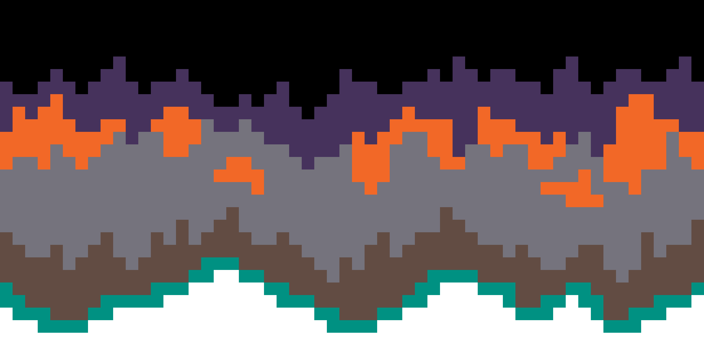
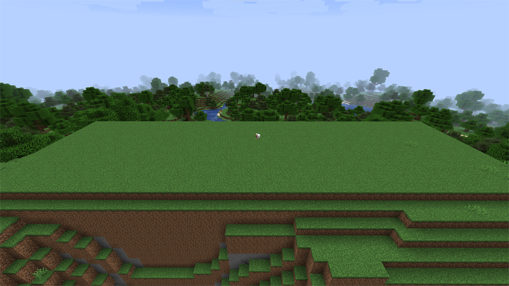
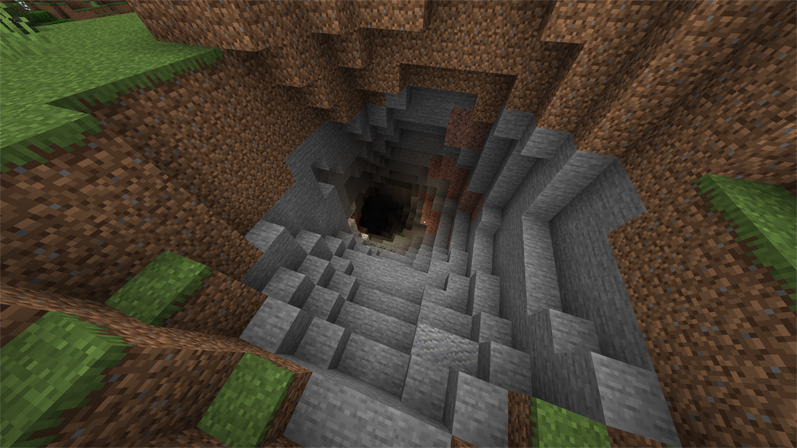
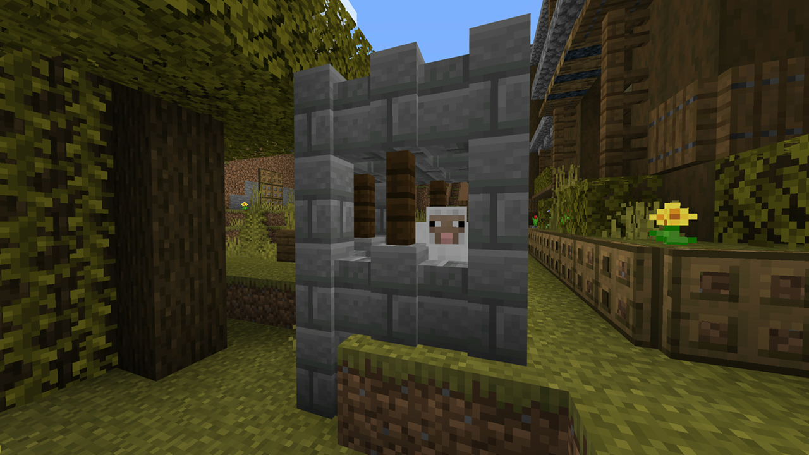
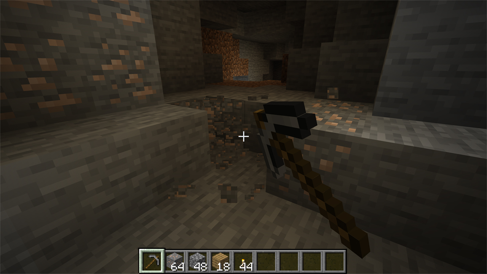

Denkbeelden van de virtuele zandbak
Denkbeelden van
de virtuele zandbak

Minecraft is de best verkochte game aller tijden. Voor veel van de, voornamelijk jonge, gebruikers is Minecraft een dagelijkse (virtuele) realiteit, waardoor de game een zekere invloed heeft. Het is daarom van belang dat het massamedium
verantwoordelijk om gaat met deze invloed. Maar aangezien de game geen duidelijk doel heeft is het niet helder welke boodschap Minecraft zijn gebruikers meegeeft en of deze wel verantwoordelijk is. Een methode om deze boodschap te achterhalen
is door te onderzoeken welke denkbeelden er worden gestimuleerd. Daarom luidt mijn onderzoeksvraag als volgt: Welke denkbeelden over de fysieke wereld en haar bewoners worden er gestimuleerd in de virtuele wereld van Minecraft?
Uit het onderzoek blijkt dat Minecraft veel overeenkomsten heeft met neoliberale en koloniale denkbeelden. Zo stimuleert de game bijvoorbeeld spelers om de wereld te behandelen als onuitputbare bron en maakt hen superieur aan de andere bewoners
van de virtuele wereld. Er kan dan ook gesteld worden dat het niet verantwoordelijk is om toekomstige generaties deze denkbeelden mee te geven. Het zou verstandiger zijn als Minecraft de game mechanics aanpast waardoor er een wereld ontstaat
zonder scheve machtsverhoudingen en die reageert op de handelingen van de speler. Door te breken met de onverantwoordelijke denkbeelden ontstaat er een virtuele wereld die er voor zou kunnen zorgen dat toekomstige generaties hun eigen
wereldbeeld en maatschappij bevragen.
“Kom je mee naar bed” roept mijn vriendin vanuit de slaapkamer. Ik zit achter mijn computer, een kamer naast haar. Zojuist heb ik de perfecte plek gevonden waar ik mijn Minecraft avontuur wil beginnen. Grenzend aan een rivier, dicht
bij een dorp, veel dieren in de omgeving en boven op een heuvel. Het enige minpunt is de hoeveelheid bomen maar daar valt wat aan te doen. “Ik maak dit even af en dan kom ik eraan” roep ik terug terwijl ik net begin aan het kappen van
bomen. “Maak je het niet te laat?” krijg ik als reactie. “Hooguit een halfuurtje, beloofd!” antwoord ik. Het is twee uur later, de plek is ontdaan van bomen en zelfs al geheel afgevlakt. Maar in plaats van hoog op een heuvel
bevind ik mij dit keer ver onder de oppervlakte. Een nabij gelegen grot had namelijk mijn aandacht getrokken en uit nieuwsgierigheid was ik het gangenstelsel gaan verkennen. Al snel raakte ik verdwaald, zowel in de grot als in de tijd.
Tijdens het zoeken naar mijn weg terug had ik bedacht dat het handig zou zijn om van de gelegenheid gebruik te maken door stenen en kolen te verzamelen. Deze twee grondstoffen zouden immers van pas komen bij het bouwen van mijn eerste
onderdak.

De afgevlakte heuveltop.

De ingang van de nabijgelegen grot.
Mijzelf compleet verliezen in een game is op zich niet uitzonderlijk. Games zoals Call of Duty Modern Warfare of Red Dead Redemption II hebben ditzelfde effect op mij, maar het ‘verdwalen’ in Minecraft is anders. In plaats van
tegenstanders omver schieten of het bewandelen van een verhaallijn, ben ik bezig met mijn verbeelding en het visualiseren daarvan. Ook wanneer ik met vrienden speel voelt de game soms meer als een virtuele hangplek, zeker in de tijd van
quarantaine. Minecraft heeft geen duidelijk doel, er valt namelijk niets te winnen of echt iets uit te spelen. De speler ‘moet’ niets en dat heeft op mij een ontspannende werking.
In het voorjaar van 2020 was Minecraft meer dan 200 miljoen keer verkocht, hiermee verstevigt het de positie van best verkochte game aller tijden. Op datzelfde moment had de
Zweedse game 126 miljoen actieve spelers waaronder veel jonge gebruikers. Voor veel van deze gebruikers is Minecraft een dagelijkse (virtuele) realiteit, waardoor de game een
zekere invloed heeft op zijn jonge publiek. Het is daarom van belang dat Minecraft verantwoordelijk om gaat met deze invloed. Maar aangezien de game geen duidelijk doel heeft is het op eerste gezicht niet helder welke boodschap Minecraft zijn
gebruikers meegeeft en of deze wel verantwoordelijk is. Een methode om deze boodschap te achterhalen is door te onderzoeken welke denkbeelden over de fysieke wereld en haar bewoners worden gestimuleerd. Daarom luidt mijn onderzoeksvraag als
volgt: Welke denkbeelden over de fysieke wereld en haar bewoners worden er gestimuleerd in de virtuele wereld van Minecraft?
Om deze vraag te beantwoorden wordt het onderzoek uiteengezet in verschillende stappen. In de eerste stap wordt er gekeken naar wat voor soort game Minecraft is en de manieren waarop de game gespeeld en gebruikt wordt. Aan de hand van een
analyse van video essayist Tom van der Linden wordt er in stap twee onderzocht op welke veronderstellingen de wereld van Minecraft berust. Wanneer deze veronderstellingen duidelijk zijn kunnen ze in de derde stap vergeleken worden met
verschillende denkbeelden over de fysieke wereld en haar bewoners. Vervolgens wordt er op overeenkomstige denkbeelden dieper ingegaan en gekeken op welke manier deze gestimuleerd worden in Minecraft. Om de invloed van games beter te begrijpen
wordt er in de vierde stap onderzocht hoe de game als medium in relatie staat met andere massamedia. Tot slot wordt er geconcludeerd of de denkbeelden die gestimuleerd worden in Minecraft wel verantwoordelijk zijn en gekeken naar een
oplossing voor eventuele onverantwoordelijke denkbeelden.
Voor het nadere onderzoek is het van belang om te begrijpen wat voor soort game Minecraft is. Het genre waar Minecraft onder valt noemt men in de gamewereld een ‘sandbox game’. De term is een metafoor die het genre vergelijkt met een
kind dat in een zandbak speelt. In een zandbak zijn er geen regels of doelen en het zand kan met de beschikbare hulpmiddelen op eindeloos veel manieren gevormd worden. Het kind
kan daardoor zijn fantasie de vrije loop laten net als de speler in een sandbox game. De zandbak wereld van Minecraft voorziet de speler van een virtuele omgeving bestaand uit blokken die de speler ook zelf kan plaatsen en verwijderen. Het
maken van constructies door middel van blokken doet sterk denken aan Lego, veel mensen noemen Minecraft dan ook het digitale Lego.
Maar anders dan Lego wordt de manier waarop de speler Minecraft speelt ook sterk beïnvloedt door de ‘game mode’. De game mode bepaalt hoe een spel wordt gespeeld op basis van een set regels. Game modes zijn in het algemeen op te delen
in twee verschillende categorieën: gebaseerd op basis van interactiepartners of speldoelen. Onder de eerste categorie vallen termen als ‘singleplayer’ en
‘multiplayer’, in een schietspel worden game modes als ‘free for all’ en ‘capture the flag’ tot de tweede categorie gerekend. Het komt vaak voor dat beide soorten game modes met elkaar in relatie staan. Zo hebben
schietspellen vaak een ‘story mode’ die zowel alleen als samen te spelen is. In Minecraft komen beide categorieën voor, de game is namelijk evengoed alleen te spelen als met meerdere tegelijkertijd, zowel offline als online. Het is
echter de categorie op basis van speldoelen, bestaand uit de game modes ‘creative’ en ‘survival’, die de meeste impact heeft op hoe Minecraft gespeeld wordt.
Virtuele multitool
In Minecraft wordt de speler na het genereren van een oneindige virtuele wereld op een willekeurige locatie gedropt. De omgeving bestaat uit blokjes van een meter aan elke kant, waarbij landschappen willekeurig gevormd worden door de
opstapeling van deze blokken. De wereld kent verschillende klimaten, van woestijn- tot poolklimaat, maar bestaat hoofdzakelijk uit graslandschap. Daarnaast is er ook een rijke
diversiteit aan flora en fauna. In tegenstelling tot survival hebben spelers in creative de mogelijkheid om te vliegen in plaats van enkel te lopen. Bovendien zijn spelers onsterfelijk en beschikken zij over onbeperkte toegang tot elk soort
blok en item, inclusief alle wezens in de vorm van eieren. Al met al zorgen de kenmerken van creative er voor dat gebruikers hun creativiteit zo goed mogelijk tot uitdrukking kunnen brengen.
In het essay ‘Where Game, Play and Art Collide’ van Rémi Cayatte staat een interessante term voor de vrije manier van spelen zoals in creative mode. Cayatte vertelt in zijn tekst hoe in 1958 de Franse socioloog Roger Caillois de term
‘paida’ introduceerden. De term verwijst naar spelen zonder regels en einddoelen en enkel bedoeld is voor het eigen speelplezier.
De combinatie van paida en de gegeven creatieve vrijheid hebben er toe geleid dat Minecraft op meerdere manieren gebruikt kan worden. James Delaney zag bijvoorbeeld al snel hoe hij de game kon gebruiken als ontwerptool. In 2013 richtte hij
Blockworks op, een bedrijf dat begon met het maken van werelden voor verschillende Minecraft servers. Tegenwoordig zien de medewerkers van Blockworks zichzelf als professionele
Minecrafters. Het bedrijf krijgt opdrachten van over de hele wereld, is inmiddels uitgegroeid tot officiële partner van Minecraft en is bovenal een financieel gezond bedrijf. De creaties van Blockworks bevatten meestal grote bouwwerken en sculpturen die in Minecraft veel tijd zouden kosten om te bouwen. Daarom gebruikt het bedrijf verschillende
hulpmiddelen zoals plugins om het bouwen efficiënter te maken.
“In the past, Minecraft was definitely perceived more as a game and now people are really interpreting it more as something that you can use as an actual functional design tool. In the past, you used to be able to only do 3D stuff in Cinema
4D or an animation program, or you would be able to do graphic design and typography in Illustrator or Photoshop. So now people are really sort of seeing this game as a way that you can use it to do your designs in a 3D game environment.”
zo vertelt Kristen Kodama, medewerkster van Blockworks, tijdens een lezing op Minecon 2016, een soort comic-con voor Minecraft fans. Delaney vult haar aan: “I think the reason
why we use Minecraft to do what we do rather than something like AutoCAD or what other architects or 3D modelers would use is because it is inclusive, everyone can use Minecraft. Where is a lot of the software used by design professionals
are very exclusive, they’re really difficult to get your grips with and normally people can’t use them. But by taking Minecraft to a sort of professional level we can hopefully engage other people, you know in what we do and hopefully they
want to do the same.”
Dat Minecraft een inclusieve ontwerptool is, bewijst ook het ontwikkelingsproject Block by Block. De stichting werd opgericht door het VN-ontwikkelingsprogramma, Microsoft en Mojang (de ontwikkelaar van Minecraft). Het idee achter het programma is om in ontwikkelingslanden buurtbewoners meer te betrekken bij het ontwerpen van de publieke ruimtes in hun wijk door middel van Minecraft. De game krijgt bij dit project boven op zijn ontwerpfunctie ook de rol als emancipatietool. Mensen die normaal gesproken geen stem zouden hebben bij de ontwikkeling en renovatie van publieke
ruimtes krijgen dankzij Block by Block de training, tools en het platform om hun ideeën te visualiseren. De samenwerking van bewoners zorgt voor meer samenhorigheid waardoor er een sterkere gemeenschap ontstaat. Dankzij deze projecten krijgt de lokale samenleving publieke faciliteiten voor iedereen.
Naast inclusieve ontwerptool leent Minecraft zich ook als virtuele ontmoetingsplek. Door COVID-19 mocht de Erasmus Universiteit in Rotterdam geen fysieke lessen meer geven. Zoom lessen waren de oplossing om leerlingen toch te kunnen
onderwijzen. Desondanks bleek er alsnog een sterke behoefte te zijn naar een ontmoetingsplek voor studenten en medewerkers buiten de formele Zoom lessen om. Zo ontstond het
idee om campus Woudestein van de Erasmus Universiteit na te bouwen in Minecraft. Wat begon als een project van een klein groepje studenten is inmiddels uitgegroeid tot een volwaardige campus waarin online speurtochten en rondleidingen aan
eerstejaars plaatsvinden. Het nieuwe normaal vraagt om virtuele ontmoetingsplekken, campus Woudestein bewijst dat Minecraft hier geschikt voor is.
Het is inmiddels duidelijk dat Minecraft populair is onder een jong en breed publiek. De game wordt daarom door sommige scholen ook gebruikt in de klas. Het grote voordeel van Minecraft is dat kinderen er enthousiast van worden en langer
gemotiveerd blijven. Daarnaast biedt Minecraft de mogelijkheid om de leerervaringen van een kind te
veranderen. Veel instituten en musea gebruiken daarom Minecraft als hulpmiddel voor meer ‘engagement’ van kinderen. Want leren over een kunstwerk uit een boek is heel
anders dan door een virtueel schilderij lopen. Zo kwam Tate Gallery met hun eigen ‘Tate Wolds’. Een Minecraft omgeving waarin bekende schilderijen zijn nagemaakt die spelers zelf kunnen ontdekken en daardoor leren over het
kunstwerk. In het laatste geval zullen veel kinderen de stof sneller onthouden omdat zij meer betrokken raken bij het onderwerp. Bovendien daagt Minecraft kinderen uit om
dingen te ontdekken en leren aangezien het geen instructies geeft aan de speler. Een voorbeeld hiervan is het maken van constructies met behulp van Redstone, een soort poeder dat zorgt voor energie en is te vergelijken is met elektriciteit.
Door het op blokken te plaatsen wordt er een soort elektrische kabel gevormd waarop andere elementen aangesloten kunnen worden zoals een knop of een lamp. Redstone geeft de speler ook de kans om objecten te laten bewegen, zolang het maar op
de juiste manier wordt gebruikt. Een kleine fout kan namelijk al voor problemen zorgen. Door Redstone te gebruiken leren kinderen om logisch en probleemoplossend te denken. Deze manier van werken laat kinderen dan ook op jonge leeftijd
kennismaken met de basisbeginselen van coderen. Al met al bevestigen de voorbeelden dat Minecraft ook kan functioneren als educatietool.
Expeditie Minecraft
Toen ik laatst met een vriend besloot om Minecraft te spelen stonden we voor de keus in welke game mode we wilde gaan spelen. Tijdens ons gesprek raakte we het er over eens dat creative mode soms ook saai kan zijn. Aangezien het geen moeite
kost om blokken te verzamelen voelt de game soms al uitgespeeld en doelloos. We deelden verhalen over hoe dit gevoel van een existentiële crisis soms ook in ons eigen leven voorkwam. Momenten dat je gelooft dat het leven geen betekenis heeft
en het eigen bestaan geen nut. Dat klinkt nogal negatief, maar we vonden het vooral heel grappig dat we beiden in creative soms een soort mini existentiële crisis ervaarden. We kozen daarom voor survival, de game mode waarbij het duidelijker
is wat er verwacht wordt. We wilden een gegeven doel en vooral een middag gamen zonder levensvragen.
Om terug te komen op het essay van Rémi Cayatte introduceert de tekst ons ook aan de tegenpool van paida namelijk ‘ludus’. Deze term staat kort samengevat voor spelen met meer regels en beperkingen. Cayatte vertelt over Lev Manovich, een wetenschapper en auteur met een duidelijk beeld van een game en aan welke regels het moet voldoen. Volgens zijn theorie bevat een game altijd een einddoel. Door middel
van opdrachten en of wedstrijden wordt de speler verder weg of dichter bij dit einddoel gebracht.
Survival mode verschilt op een aantal vlakken van creative. Zo kan de speler in survival sterven door bijvoorbeeld uithongering, ergens vanaf te vallen en nachtelijke vijanden zoals zombies, ‘skeletons’ en ‘creepers’. Deze
vijanden worden ook wel ‘hostile mobs’ genoemd, aangezien zij altijd de speler zullen aanvallen wanneer deze in hun zicht komt. Om zich te beschermen tegen deze hostile
mobs moet de speler een schuilplaats zien te creëren. De blokken die de speler hiervoor nodig heeft moeten verzameld worden door te ‘minen’. Dit doet de speler in het begin met blote handen maar door ‘crafting’ kunnen deze
blokken ook omgezet worden in gereedschappen zoals een pikhouweel of zwaard. Door middel van speciale blokken, bijvoorbeeld van ijzer en diamant, kunnen deze gereedschappen steeds geavanceerder worden waardoor het jagen en verbouwen van
groentes voor voedsel steeds makkelijker gaat. Tot slot kan de speler alleen lopen en springen en niet vliegen zoals in creative. Survival mode is daarom samen te vatten als een virtuele Robinson Crusoe ervaring. Net als de speler moet de
hoofdpersoon Robinson Crusoe van de gelijknamige 18e-eeuwse roman zich zien te redden met de gegeven middelen van het eiland waar hij na een schipbreuk op strandt.
Buiten het doel om te overleven en optionele ‘achievements’ had Minecraft voor 2016 nog niets wat leek op een einddoel. In datzelfde jaar bracht de game een nieuwe
update uit met hierin ‘the End’. In deze virtuele ruimte kan de speler er voor kiezen om de ‘Ender Dragon’ te verslaan. Hoewel de speler deze prestatie niet hoeft te behalen komt Minecraft met dit einddoel wel meer in de
richting van Manovich’s definitie van een game. Survival mode valt dan ook onder de term ludus doordat deze game mode simpelweg meer regels, beperkingen en doelen heeft.
Nu er een duidelijk beeld is van Minecraft, kan er het volgende geconstateerd worden. Survival mode is kort samengevat een virtuele Robinson Crusoe ervaring en komt daarnaast meer in de buurt van een traditionele game. In creative mode kan
Minecraft op verschillende manieren gebruikt worden, bijvoorbeeld als design-, emancipatie- en educatietool en virtuele ontmoetingsplek. Het vervult daarmee de rol van creatief hulpmiddel en sociaal platform, waarvan de effecten op het eerste
gezicht alleen maar positief lijken.
Er zijn best vaak momenten geweest dat ik mijn concentratie verloor tijdens het onderzoek en op YouTube belandde. Omdat ik dan toch bezig wilde zijn met mijn scriptie ging ik vaak op zoek naar fascinerende Minecraft video’s. Heel moeilijk is
het niet om zulke video’s te vinden aangezien Minecraft behoort tot één van de grootste genres op YouTube. Zo zijn er ontelbaar veel ‘tutorials’ over hoe de speler zo efficiënte mogelijk bepaalde materialen kan minen. Zo legt het
YouTube kanaal ‘Shulkercraft’ in een van zijn video’s uit hoe zijn volledig automatische constructie 120.000 blokken steen in één uur kan verzamelen. Een andere bekende
categorie Minecraft video’s is de ‘speedrun’. Hierin moet de speler zo snel mogelijk een bepaald doel behalen om een record te vestigen. Een voorbeeld hiervan is de speedrun waarbij de speler zo snel mogelijk de Ender Dragon moet
verslaan. Maar ook andere video’s kunnen mij afleiden, bijvoorbeeld waarin YouTubers reageren op bizar goed nagebouwde Lord of The Rings scenes. Of de video waarbij ‘RTGame’ 100 volgers van zijn kanaal vraagt om een Lego wereld te bouwen in zijn Minecraft server.
Al deze video’s zijn enorm vermakelijk, maar het komt minder vaak voor dat er een inhoudelijke video over Minecraft te vinden is. Toen ik voor de zoveelste keer in een ‘rabbit hole’ van YouTube was beland, kwam ik per toeval een video
essay van het kanaal ‘Like Stories Of Old’ tegen. Deze video is uiteindelijk heel waardevol geworden voor mijn onderzoek.
Tom van der Linden, de man achter Like Stories Of Old, begon zijn YouTube kanaal in 2017 en heeft nu bijna 400.000 abonnees. Hij studeerde ruimtelijke ordening en deed een
master in milieusociologie, maar is tegenwoordig video essayist. In zijn video essay ‘The Unfulfilled
Potential of Minecraft – Assuming a Different Perspective’ zet hij Minecraft uiteen door middel van een analyse. Deze analyse dient als hulpmiddel om de
veronderstellingen in de wereld van Minecraft helder te krijgen. Wanneer deze veronderstellingen in kaart zijn gebracht kunnen ze vergeleken worden met denkbeelden over de fysieke wereld en haar bewoners.
Van der Linden begint met de uitleg dat elke game (deels) gebaseerd is op hoe mensen naar de wereld kijken, of beter gezegd hoe mensen de realiteit interpreteren. Deze veronderstellingen over de realiteit zijn te herkennen aan de ‘game
mechanics’, de regels die virtueel gedrag mogelijk maken en beperken. Het onderzoeken van deze veronderstellingen is een goede methode om te achterhalen waarom een game
is ontworpen zoals het is. Van der Linden legt uit dat zijn analyse bestaat uit drie lagen die ieder met elkaar verbonden zijn; de ontologische, de normatieve en de strategische. De eerste laag, de ontologische, dient als kern en behandelt de
fundamentele ideeën over hoe de werkelijkheid wordt geïnterpreteerd. De tweede laag is de normatieve, hierin worden morele kwesties behandelt. In de derde laag, de strategische, worden de praktische handelingen bepaald op basis van de eerder
beschreven lagen.
Strategische korst
Toen ik eenmaal mijn weg terug uit de grot gevonden had en mij weer bevond op mijn perfecte platte heuveltop, kon ik beginnen met het bouwen van mijn eerste onderdak. Deze thuishaven moest mij voorzien van een veilige slaapplek die mij zou
beschermen tegen alle nachtelijke vijanden. Niet veel later was het bouwwerk af en ontdekte ik dat er nog genoeg blokken steen en kool over waren om mijn gereedschap te versterken en fakkels te maken. Na dit gedaan te hebben viel mijn oog op
de ‘hunger indicator’ die zo goed als leeg was. Dit betekende dat ik aan eten moest komen, daarom plaatste ik een omheining en lokte hier vervolgens kippen naar toe. Eenmaal gevangen kon ik de kippen laten broeden en slachten voor
vlees. Met een paar dode kippen had ik namelijk genoeg eten voor de komende Minecraft dagen.
Alle hiervoor beschreven praktische handelingen bevinden zich binnen de strategische laag, aangezien deze in relatie staan met wat er gedaan kan en moet worden binnen de virtuele wereld van Minecraft. De strategische laag staat daarom in
directe relatie met de ‘gameplay’, ofwel de ervaring van de game.
Normatieve mantel
Bij het terugzien van mijn eerste bouwwerk op de heuvel besloot ik dat het tijd was voor een uitbreiding. Het idee was een degelijke thuisbasis met een extra verdieping en ramen die een panorama view zouden bieden op de geblokte horizon. Toen
ik aan de slag ging viel het mij al snel op dat deze heuvel ook diende als hotspot voor de lokale kippen. Tijdens het plaatsen van blokken werd ik meerdere malen gestoord door een van deze beesten. Uit frustratie sloeg ik dan vaak de kip, die
dat vaak niet overleefde. Als mijn vriendin dan toevallig meekeek, kreeg ik meestal een preek over hoe zielig dat wel niet was voor het virtuele dier. Dit zei ze trouwens ook toen ik samen met een vriend een schaap opsloot in een hok van één
kubieke blok. Wij waren echter van mening dat dit een gepaste straf voor het schaap was aangezien het meerdere malen, met opzet volgens ons, in de weg liep. Terwijl mijn vriendin ons beschuldigde van dierenmishandeling zagen wij dit als
onschuldige grap en gingen vrolijk door.

Het opgesloten schaap.
Zoals eerder gezegd behandelt de normatieve laag morele kwesties. Aan de oppervlakte lijkt Minecraft een spel zonder moreel kompas, het geeft namelijk geen feedback op goede en slechte acties. De situatie in de vorige alinea legt bloot hoe de
gegeven vrijheid van handelen aan enkel de speler ook kan leiden tot verschillende opvattingen over het gebruik ervan. Deze monopoliepositie maakt de omgeving en zijn bewoners ondergeschikt aan de speler en dat is indirect een morele keuze.
Het ‘alles is toegestaan’ principe geeft de speler ook de mogelijkheid om zijn macht te misbruiken tegenover ondergeschikten. Ook in dit soort gevallen roept Minecraft de speler geen halt toe en geeft daarmee geen aanleiding tot morele
bezorgdheid. De enige morele beperkingen binnen het spel worden dus opgelegd door de speler zelf.
Ontologische kern
Het kan zowel dag of nacht zijn, eerlijk gezegd weet ik niet eens hoelang ik mij nu al in deze mijnschacht begeef. Met een ijzeren pikhouweel en een hoop fakkels op zak besloot ik om mijn voorraad blokken ijzer aan te vullen. Tijdens het
minen fantaseer ik al over wat ik met de nieuwe blokken zal doen, misschien een paar nieuwe ‘iron boots’ of toch maar nieuwe hakbijlen? In tegenstelling tot Lego waarbij ik het moest doen met de stenen die ik had, voorziet Minecraft
mij van alle blokken die ik nodig heb om mijn ideeën tot leven te wekken. Ik herinner mij dagen als kind waarbij ik urenlang naar een Lego steen zocht, waarvan ik er maar een paar had. Eenmaal gevonden was de euforie groot, maar het gemak van
Minecraft heeft toch mijn voorkeur. Dan bedenk ik mij hoe de gehele virtuele wereld van Minecraft als het ware één grote bak met oneindig veel legostenen is. De wereld van Minecraft is eigenlijk een onuitputbare bron waarbij ieder blok,
iedere boom, elk terrein en zelfs elk wezen dient als gereedschap voor mijn creaties en dat voelt enigszins ongemakkelijk.

Het minen van ijzer blokken in de nabije grot.
Anders dan Lego begint Minecraft niet met losse blokken die vanuit het niets tot een creatie gebracht worden. De speler begint namelijk vanaf het eerste moment in een al
bestaande wereld. Een met flora en fauna en mensachtige wezens, in principe een representatie van de natuurlijke wereld. Deze natuur is echter een illusie aangezien er zo goed als geen natuurlijke processen voorkomen in Minecraft. In
tegenstelling tot de natuur van de fysieke wereld reageert de virtuele omgeving niet op de aantasting van de speler. Er kan dus geconcludeerd worden dat de speler beschikt over vrijheid van handelen zonder een opgelegd moraalkompas en daarbij
geen ecologische gevolgen van zijn acties ondervindt. Minecraft berust dan ook op de veronderstellingen dat de virtuele natuur ongevoelig is voor en in dienst staat van de speler zijn manipulatie en dat de virtuele wereld en haar bewoners
ondergeschikt zijn aan de speler.
Als kind moest ik van mijn moeder in de zomer vaak verplicht buitenspelen, wat voor mij spelen met Lego in de zon betekende. Dit deed ik liever alleen dan met vrienden. Volgens mijn moeder was ik vooral aan het bouwen in tegenstelling tot
mijn vrienden die vaak verhalend wilde spelen met de minifiguren. Uren, soms dagen lang kon ik met een bouwwerk bezig zijn. Het werkte ontspannend voor mij, maar de liefde voor bouwen verloor ik op de middelbare school. Lego was niet meer
cool en door de puberteit veranderden mijn interesses. Tot 4 jaar geleden, op het moment van schrijven ben ik 25, toen een paar vrienden Minecraft aan mij introduceerden. Al snel had ik door dat Minecraft de oude liefde weer aanwakkerde.
Ik heb er altijd van gehouden om nieuwe werelden te ontdekken, dingen te bouwen en omgevingen naar mijn hand zetten. Maar ik denk dat deze interesses en gevoelens ook zijn gevormd door de cultuur waarin ik ben opgegroeid. Een cultuur waarbij
het projecteren van de menselijke visie op de omgeving wordt ervaren als iets positiefs en het uitbreiden daarvan als progressie. Mijn interesses en gevoelens zijn oprecht, maar zijn niet ontstaan in alleen mijn eigen bubbel.
Onuitputbare bron
Nu er een duidelijk beeld is van de veronderstellingen waarop Minecraft berust kunnen deze zoals eerder beschreven vergeleken worden met denkbeelden over de fysieke wereld en haar bewoners. Door overeenkomsten tussen beide te vinden kan er
onderzocht worden of deze denkbeelden wel verantwoordelijk zijn om door te geven aan toekomstige generaties.
Van der Linden vervolgt zijn essay met een uitleg over hoe de mens al sinds het ontstaan van agrarische samenlevingen zijn natuurlijke omgeving manipuleert voor eigen behoeften. Vanaf dat moment begon de mens de natuur instrumenteel te
behandelen en op basis van haar functionaliteit. De moderne maatschappij is grotendeels te danken aan deze houding tegenover de natuur. Minecraft en andere soortgelijke sandbox games berusten eveneens op het idee dat de natuur als instrument
gebruikt kan worden. Zoals uit de ontologische laag bleek draaien deze games enkel om de wil van de speler en zijn manipulatie. Maar de wereld als onuitputbare bron, een
idee
dat terug te zien is in Minecraft, komt volgens Van der Linden sterk overeen met denkbeelden van een recenter gedachtegoed, namelijk die het neoliberalisme.
Van der Linden geeft echter een beperkte uitleg van het neoliberalisme. Maar aangezien hij later een analyse over dit gedachtegoed geeft is een uitgebreidere uitleg van belang. Neoliberalisme kan gedefinieerd worden als een politiek
denksysteem waarbij de vrije markt de belangrijkste rol van de samenleving heeft en de overheid een geringe. Volgens de neoliberalen zorgt bemoeienis van de overheid alleen maar voor inefficiëntie en hogere kosten. De overheid zou volgens hen juist moeten zorgen voor regels en wetten die de markt stimuleren, denk hierbij aan het schrappen van accijnzen en uitstootlimieten. Hoewel het milieu geen onderdeel was van het oorspronkelijke neoliberale gedachtegoed is het wel verbonden met het neoliberale beleid doordat veel bedrijven eenmaal afhankelijk zijn van de
natuur. Aangezien een neoliberaal beleid deze bedrijven niet tegen wil werken, zou er dus gesteld kunnen worden dat het beleid de markt indirect een vrijbrief geeft om de
natuur zonder limiet uit te buiten. Tegenwoordig is het bekend dat de wereld geen onuitputbare bron is, echter kiezen veel bedrijven toch eerder voor aantrekkelijke winst dan het welzijn van de aarde.
Het neoliberale gedachtegoed kan volgens Van der Linden uiteengezet worden in de volgende lagen. De ontologische: de natuur is ongevoelig voor menselijke activiteit. De normatieve: als gevolg hiervan beschouwd de mens de natuur als
instrumenteel. De strategische: hierdoor maakt de mens onbezorgd gebruik van de natuur en zet deze naar zijn hand. Van der Linden stelt dat de overeenkomsten tussen het neoliberalisme en Minecraft voor de hand liggen, maar ligt zijn uitspraak
verder niet toe ondanks dat dit wel van belang is. Er kan namelijk door de analyse van Minecraft gesteld worden dat de game opzettelijk de speler stimuleert om de wereld om zich heen instrumenteel te gebruiken en te zien als onuitputbare
bron, net zoals het neoliberale beleid indirect de markt stimuleert om de natuur zonder limiet uit te buiten. Dat de speler gestimuleerd wordt om op een bepaalde manier te spelen wordt ‘intended gameplay’ genoemd. Minecraft houdt dus
eigenlijk met opzet neoliberale denkbeelden in stand.
Over de analyse van Minecraft concludeert Van der Linden tenslotte het volgende: “[…] the world is only as interesting as the amount of things that there are to exploit, and there is an everlasting hunger for more; more items, more
rewards, more treasures […]”. Daar heeft hij een goed punt aangezien Minecraft zijn gebruikers aanmoedigt om methodes te bedenken waarbij grondstoffen steeds
efficiënter
verzameld worden. Er zijn hier dan ook veel tutorials op YouTube van te vinden. Bijvoorbeeld in de video van ‘quinnybagz’ waarin wordt uitgelegd hoe er door middel van een semiautomatische tarweboerderij ontzettend snel en gemakkelijk
veel tarwe kan worden geproduceerd. Dit soort constructies, ook wel ‘automatic farms’ genoemd, zijn slim bedacht en superefficiënt. Het kanaal ‘kuusj98’ laat
echter zien dat deze efficiënte constructies op grote schaal een hele andere lading krijgen. Deze constructies zijn namelijk niet meer gemaakt om enkel de speler te voorzien
van voedsel en hebben veel weg van grootschalige productiehuizen.
Super efficiënte boerderijen
Tijdens mijn stageperiode was het onderzoek van mijn scriptie een veel terugkomend gespreksonderwerp. Toen ik met een van mijn stagebegeleiders sprak over de automatic farms wees hij mij op de HyCare methode van het bedrijf MS Schippers. In
een tekst ter promotie van HyCare legt het bedrijf het concept als volgt uit: “MS Schippers has invented a new method of pig farming which aims to make the use of antibiotics completely superfluous in livestock farming. HyCare is best
compared to apartments for pigs. Piglets are kept in a large container with their mother, separate from the rest of the animals. An additional advantage is that the environment is more peaceful for the animals. These containers are placed
on top of each other in a mechanical rack and can be passed in front of the farmer for inspection. The pigs come to the farmer instead of vice versa. It might take some getting used to because it doesn’t look much like a traditional shed,
but it’s safer, more efficient and much more pleasant for the pig families.”
In 2020 is Nederland de een na grootste landbouwexporteur ter wereld. Ondanks dat het aantal boerderijen afneemt blijft de productiviteit door mechanisering stijgen. De bizarre HyCare methode, waarvan de claim op een verhoogd welzijn nergens staat bewezen, is een voorbeeld waarbij efficiëntie en mechanisering de kloof tussen mens en dier nog
groter maakt. Door constructies als deze worden dieren nog verder weg geplaatst van hun natuurlijke omgeving waardoor het natuurlijk gedrag steeds meer zal vervagen. De eeuwige drang naar meer heerst ook in Minecraft en blijft niet enkel bij
automatic farms die lijken op grootschalige landbouwconstructies. Er zijn ook genoeg YouTube video’s te vinden van absurde constructies, die doen denken aan de HyCare methode, waarbij dieren eveneens volledig geïndustrialiseerd worden en
vervreemd van de speler.
Een voorbeeld hiervan is de automatic farm van YouTuber ‘Mumbo Jumbo’ die er voor zorgt dat schapen automatisch worden geschoren. Deze constructie kan gezien worden als
een vicieuze cirkel. De schapen lopen namelijk een route richting een scheerapparaat. Na het scheren lopen de schapen weer dezelfde route en ondertussen groeit hun vacht op tijd aan om weer geschoren te worden. Net zoals de HyCare methode is
dit een volledig geautomatiseerd systeem waarbij de speler zo min mogelijk handelingen hoeft te doen. Maar er zijn ook veel Minecraft constructies op YouTube te vinden waarbij dieren puur gefokt worden om vervolgens te slachten. Zo legt
‘NaMiature’ in een van zijn video’s uit hoe een semiautomatische varkensboerderij gemaakt kan worden. In deze constructie worden varkens automatisch verbrandt tot ham bij het indrukken van een enkele knop.
Toch is het niet zo raar dat deze constructies ontworpen worden aangezien Minecraft geen morele feedback geeft, dus ook niet op het mishandelen van dieren. Het maakt daarom niet uit of er kippen gehouden worden in een gebied waar ze vrij
kunnen lopen of geplaatst worden in een bouwwerk dat lijkt op een legbatterij. De laatste methode wordt door de game zelfs beloond omdat het de snelste manier is om eieren te verzamelen. Het is echter tegenstrijdig te noemen dat de virtuele
wereld van Minecraft deze dieronvriendelijke methode aanleert en aanmoedigt, terwijl in de fysieke wereld de legbatterij vanaf 2021 in Nederland is verboden.
Het stimuleren van het neoliberale denken binnen Minecraft kan dus zorgen voor situaties die onbedoelde metaforen kunnen produceren. De metafoor die de automatic farms voor de bio-industrie creëren is hier een goed voorbeeld van. Het is
belangrijk om te noemen dat deze metafoor hoogstwaarschijnlijk niet met opzet door de ontwikkelaars is gecreëerd, dit wordt dan ook ‘unintended gameplay’ genoemd. Het is eerder een rare samenloop van de game mechanics, maar dat neemt
niet weg dat de game het alsnog aanmoedigt om constructies te bouwen die doen denken aan de bio-industrie. Al met al kan er afgevraagd worden of deze houding tegenover de natuur doorgegeven moet worden aan een volgende generatie. Misschien is
het daarom een beter idee om met het neoliberale denken te breken en gebruikers bewust te maken van de ecologische gevolgen van hun acties en het welzijn van dieren in automatic farms.
Gevaarlijke barbaren
In de normatieve laag werd het duidelijk dat de speler een monopolie heeft op vrijheid van handelen. Hierdoor krijgt de speler ook de mogelijkheid om zijn macht te misbruiken tegenover andere bewoners van de virtuele wereld. Minecraft creëert
met deze scheve machtsverhouding echter ook een mentaliteit dat sterk doet denken aan koloniale denkbeelden. Waar het neoliberale denken en de onbedoelde metafoor voor de bio-industrie vooral betrekking hadden op de houding van de mens
tegenover de natuur, gaan deze denkbeelden vooral over machtsgebruik tegenover anderen.
Zoals eerder beschreven kan survival mode gezien worden als een robinsonade. De term verwijst naar de roman Robinson Crusoe van de schrijver Daniel Defoe.18 De hoofdpersoon Robinson Crusoe is eigenaar van een plantage en gaat op verschillende
reizen. Tijdens een reis naar Afrika gaat het mis, zijn reis wordt namelijk abrupt beëindigd door een schipbreuk waardoor hij strandt op een onbewoond eiland. Genoodzaakt maakt Crusoe een hut met resten van zijn schip en leert hij te
overleven door graan te verbouwen, geiten te fokken en potten te bakken. Met de tijd eigent hij zich het land en de diamantmijn toe. Enkele jaren later bevrijdt hij gegijzelden uit de klauwen van kannibalen. Deze metgezellen noemt hij Friday
en Xury. Crusoe degradeert hen al snel tot slaaf, de voornaamste reden hiervoor is hun huidskleur, die donkerder is dan van hemzelf. Uiteindelijk krijgt Crusoe de kans om
een passerend schip te overmeesteren en vaart hiermee terug naar zijn
plantage. Bij aankomst blijkt dat zijn plantage al die tijd draaiende is gehouden waardoor er veel geld voor hem is verdiend. De roman eindigt dan ook met een welvarende Robinson Crusoe.
Uit onderzoek, zo beschrijft een artikel van De Correspondent, blijkt dat racisme pas vanaf de achttiende eeuw door westerse landen werd geïnstitutionaliseerd. De auteur beargumenteert: “Om goed te praten dat hele volken systematisch
onderdrukt werden, was het nodig om die volken af te schilderen als kinderlijk, dom, gevaarlijk voor elkaar en anderen. Van rijke werelden en culturen werden barbaarse wezens gemaakt zonder geschiedenis, die meer op dieren dan op ons
leken.” Deze goedpraterij van het koloniale denken is ook terug te zien in Robinson Crusoe. In de tijd dat de roman uitgegeven werd zagen veel mensen Crusoe als een held
die zich moest verdedigen tegen kannibalen in plaats van als indringer bij een inheemse stam. Door de inheemse stam weg te zetten als onbeschaafd en gevaarlijk creëert de roman een duidelijk verschil tussen Crusoe en de mensen die hij
‘ontdekt’. Dit onderscheid versterkte en bevestigde destijds het idee dat de westerse beschaving superieur was aan andere ‘onbeschaafde’ volken. Kolonialisme werd ronduit gezien als een methode om geld te verdienen en het
uitmoorden van inheemse volken als zelfbescherming.
In Minecraft is dit koloniale denken ook gedeeltelijk terug te zien, aangezien de game met opzet een onderscheid maakt tussen de superieure speler en ondergeschikte bewoners van de virtuele wereld. Als de speler land wil toe eigenen moeten
andere bewoners voor hem wijken. Dit koloniale handelen wordt echter niet beschouwd als probleem aangezien sommige bewoners zoals hostile mobs een gevaar vormen. De speler heeft daarom ook geen andere keus dan de hostile mobs te doden uit
zelfverdediging. In het artikel ‘Minecraft: The Robinsonade of Creativity or Colonialism?’ maakt Ian Bryce Jones een interessante vergelijking. Hij stelt dat zombies en skeletons, ofwel mensachtige hostile mobs, gezien kunnen worden
als de representatie van inheemse volken. Uitgaand van zijn vergelijking kan er ook gesteld worden dat zombies en skeletons dus eigenlijk hun territorium verdedigen, net zoals
sommige inheemse volken zich verdedigden tegen westerse indringers. Omdat Minecraft de speler geen keus geeft om veilig samen te leven met deze vijanden, stuurt het met opzet aan om land toe te eigenen met ‘gerechtvaardigd’ geweld. Er
kan daarom geconcludeerd worden dat Minecraft met deze intended gameplay in wezen het koloniale denken aanmoedigt.
Tot slaaf gemaakte villagers
Om op een gewenste locatie te kunnen handelen met zogenaamde ‘villagers’ kunnen spelers een dorp opzetten. De eerste stap hier naar toe is eenvoudig, namelijk het bouwen van huizen. Villagers en spelers zijn beide mensachtige wezens,
maar kunnen gezien worden als twee verschillende soorten groepen, aangezien zij op meerdere vlakken van elkaar verschillen. Zo hebben villagers grotere neuzen, praten ze in een onverstaanbare taal, kunnen ze verliefd worden en ‘baby
villagers’ produceren. Het grootste onderscheid wordt echter bepaald door de machtspositie van de speler tegenover de villager. Een villager is namelijk een ‘passive mob’ en zal daarom de speler nooit aanvallen in tegenstelling
tot de agressieve hostile mobs. Zelfs wanneer villagers worden geprovoceerd of aangevallen zullen zij niet terugvechten.
Villagers kunnen, net zoals zombies en skeletons, gezien worden als de representatie van inheemse volken. Dit wordt duidelijk door onder andere de volgende overeenkomsten:
villagers leven in kleine verspreide dorpen met simpele huisjes van hout of zand, zijn eenvoudige boeren van tarwe, bieten en wortelen en spreken zoals eerder beschreven in een taal die de speler niet begrijpt. Daarnaast kunnen er tijdens het
handelen met villagers situaties ontstaan die doen denken aan de oneerlijke onderhandelingspositie van inheemse volken tegenover westerse kolonisten. Villagers die niet mee willen werken of geen eerlijke ruil aanbieden in de ogen van de
speler, kunnen bijvoorbeeld eenvoudig worden gedood aangezien zij machteloos staan tegenover het geweld van de speler. Dit herinnert aan inheemse volken die ook zo goed als machteloos stonden tegenover de geavanceerde wapens van westerlingen.
Hierdoor waren zij genoodzaakt om in te stemmen met oneerlijke handelsovereenkomsten.
De tweede stap om een dorp op te zetten is uitdagender, namelijk het dorp laten bewonen door villagers. Dan Olsen, de man achter het YouTube kanaal ‘Folding Ideas’, legt in een van zijn video’s uit dat er twee methodes zijn om
villagers een dorp te laten bewonen. De eerste methode is zeer omslachtig aangezien de speler veel stappen moet doorlopen. Volgens Olsen willen de ontwikkelaars van Minecraft
liever niet dat spelers een eigen dorp bouwen, maar de bestaande juist uitbreiden. De tweede methode is simpelweg het kidnappen van villagers uit een bestaand dorp, om ze
vervolgens te vervoeren naar de gewenste locatie. Het transport kan per boot of via een mijnkar op een aangelegd spoor, ook hier zijn genoeg tutorials over te vinden op YouTube.
Olsen legt uit hoe deze tweede methode gezien kan worden als een metafoor voor de “[...] brutal relocation policies of colonialism.”
De overeenkomsten worden duidelijker wanneer er bijvoorbeeld gekeken wordt naar de werking van de trans-Atlantische slavenhandel.
De trans-Atlantische slavenhandel werd bedreven door Europeanen vanaf de 16e tot aan de 19e eeuw en bestond uit de in- en verkoop en het vervoeren van tot slaaf gemaakte Afrikanen naar Amerika. Deze slavenhandel was onderdeel van de driehoekshandel, ofwel de handel tussen Europa, Afrika en Amerika. Vanuit West-Europa vertrokken schepen met goederen zoals geweren, aardewerk, metalen en textiel naar
de slavenforten aan de westkust van Afrika. De slavenforten dienden als verzamelpunten voor Afrikaanse en Arabische mensenhandelaren. Europeanen ruilden hier hun goederen voor slaven om vervolgens met hun volgeladen schepen de oversteek naar Amerika te maken. Door de slechte omstandigheden aan boord stierven veel slaven al tijdens de
reis. Aangekomen in een van de koloniën in Amerika werden de slaven verkocht om op plantages of in mijnen te werken. Met het geld wat de Europeanen hier aan verdienden kochten
zij koloniale producten zoals suiker, koffie, tabak en katoen. Met deze producten keerde zij terug naar Europa om het voor veel geld te verkopen. Deze winstgevende driehoekshandel zorgde er voor dat er al snel veel meer plantages bij kwamen
in koloniale gebieden. De vraag naar Afrikaanse slaven werd daarom ook steeds groter aangezien zij, in tegenstelling tot de oorspronkelijke bevolking, vaker opgewassen waren tegen het zware werk op de plantages.
De overeenkomsten tussen de trans-Atlantische slavenhandel en het vervoeren van gekidnapte villagers per boot naar een andere locatie om ze daar te gebruiken voor handel zijn voor de hand liggend. Zeker wanneer de villagers op hun nieuwe
locatie worden gebruikt voor automatic farms die veel weg hebben van plantages. Volgens Olsen zorgt het feit dat villagers een regionaal uiterlijk hebben ervoor dat zij
zichtbaar niet thuishoren in hun nieuwe omgeving. Het laatste samen met de gedachte dat villagers gezien kunnen worden als de representatie van inheemse volken versterken de
metafoor van Olsen.
Het stimuleren van koloniale denkbeelden, evenals het aanmoedigen van het neoliberale denken, creëert situaties die onbedoelde metaforen produceren. Opnieuw kan er gesteld worden dat ook de metafoor van Olsen niet met opzet is gecreëerd,
waardoor het onder unintended gameplay valt. Net als bij de automatic farms wordt de speler voor het kidnappen en vervoeren van villagers indirect beloond, aangezien het opnieuw de meeste efficiënte methode is.
Koloniale machtsstructuren
Hoewel neoliberale en koloniale denkbeelden vooral van toepassing zijn op survival mode, zijn beide in zekere zin ook terug te zien in creative mode. Zo legt Ian Bryce Jones in zijn eerder vermelde artikel uit hoe creative mode niet alleen
dient als creatieve uitlaatklep. Doordat de speler in deze game mode kan vliegen en daarnaast elk soort blok tot zijn beschikking heeft creëert Minecraft het idee dat de speler in wezen een goddelijk figuur is. Ook heeft de speler een
oneindige hoeveelheid eieren van alle dieren en verschillende mobs. Hierdoor kan de speler bijvoorbeeld zo vaak als hij wil nieuwe villagers creëren, dit wordt ook wel ‘spawnen’ genoemd. Minecraft suggereert hiermee dat villagers als
vervangbaar vee gezien en behandeld kunnen worden. Jones concludeert over zowel de koloniale houding als de goddelijke macht van de speler binnen Minecraft het volgende: “Ultimately, playing Minecraft allows people to role-play as the
oppressor, which rationalizes racist behavior outside a digitized format.”
Ook Olsen citeert in zijn video een tekst van het essay ‘Racism, Sexism and Colonial Legacies in the Dota 2 South Africa Gaming Community’ van Jules Skotnes-Brown die de conclusie van Jones bijstaat. “In an era when physical space
has been thoroughly explored, virtual spaces harken back to the romance of the colonial frontier — as new regions to discover and conquer. Such conquest is not just psycho-symbolic, but also sensitive to the legacies of colonialism and
underdevelopment. Since most mainstream video games are produced and disseminated in the ‘developed’ world, they are spaces in which primarily ex-colonial nations can continue to ‘conquer’ the ‘other,’ even in
post-colonial periods.”
Olsen legt uit hoe de ontwikkelaars van verschillende sandbox games zich tot een bepaalde hoogte bewust zijn van het feit dat zij een koloniale mentaliteit stimuleren. Door scenario’s te creëren waarin deze mentaliteit gerechtvaardigd wordt,
proberen de games uit de buurt te blijven van koloniale propaganda. Zo creëert Minecraft een robinsonade scenario, waarbij het koloniale handelen van de speler gerechtvaardigd
wordt aangezien hij anders niet zal overleven. Olsen concludeert dat deze fictieve scenario’s echter uitgaan van een samenleving zonder pijnlijke geschiedenis.
Minecraft is geen een-op-een vergelijking met het kolonialisme. De overeenkomsten met koloniale denkbeelden en de metafoor voor de trans-Atlantische slavenhandel ontstaan echter omdat de fysieke wereld geen blanco geschiedenis kent.
Ongelijkheden die voortvloeien uit koloniale machtsstructuren zijn nog steeds zichtbaar in de hedendaagse postkoloniale samenleving. Hierdoor liggen associaties met het kolonialisme en daarbij behorende slavernijverleden nog steeds gevoelig.
Vandaag de dag is de aandacht voor Black Lives Matter groter dan ooit, keert de zwarte pieten discussie jaarlijks terug, wordt er afgevraagd of Jan Pieterszoon Coen nog op een sokkel mag blijven staan en proberen verschillende musea en andere
culturele instanties op een juiste manier om te gaan met hun koloniale collecties. In een tijd waarin de
samenleving een weg probeert te vinden om te ‘dekoloniseren’ is het scheef dat er games bestaan die het koloniale denken onder jonge generaties juist stimuleren, romantiseren en in stand houden.
In de 18e eeuw ontstond de Verlichting, een stroming die zorgde voor een nieuwe kijk op wetenschap, politiek en religie. Tijdens deze stroming had literatuur een invloedrijke rol wat onder andere te maken had met de ontwikkelingen binnen de
boekdrukkunst. In literatuur kon men nieuwe en radicale opvattingen over de maatschappij introduceren. Sommige van deze nieuwe ideeën hadden grote impact op het denken en handelen van de burger.
Doordat er in deze periode veel ontdekkings- en handelsreizen naar nieuwe werelden voorkwamen was het niet gek dat imaginaire reisverhalen tot één van de populairste genres van de roman behoorde. Schrijvers van dit genre wilde de lezer een
waarheidsgetrouwe indruk geven over reizen naar verzonnen gebieden en volkeren, maar vooral hun maatschappelijke idealen verkondigen zonder vervolgd te kunnen worden. Hierdoor
werd het genre voor veel schrijvers een ideaal middel om kritisch te kunnen zijn op hun huidige samenleving. Deze verhalen waren dan ook vaak een weerspiegeling van de Verlichtingsidealen. Een goed voorbeeld van een imaginair reisverhaal is het eerder beschreven Robinson Crusoe. De roman zit namelijk vol met Verlichtingsidealen, denk bijvoorbeeld aan de vrijheid van het individu waar Crusoe
letterlijk van geniet door in eerste instantie alleen op het eiland te zijn.
Naast het imaginair reisverhaal waren er ook andere manieren waarop schrijvers hun opvattingen kenbaar maakten. Een voorbeeld hiervan is het kinderboek A-B Boek van Johan Hendrik Swildens, een voorstander van de burgerbewapening. In het boek
uit 1781 leerde kinderen bij de B van burger dan ook het volgende zinnetje: “Burger, u beschermt de stad. Stel hierin uw eer. Dit moet ieder burger doen, ook de grootste heer.” Hierdoor bracht hij kinderen zijn politieke ideeën bij.
Aan het begin van de 20e eeuw had film een belangrijke rol in het verstrekken en verspreiden van de Sovjet-ideologie. In de jonge Sovjet-Unie waren veel burgers analfabeet waardoor film het ideale medium was om de massa te informeren over het
nieuwe moderne Sovjet leven op een manier zoals geen ander medium kon. Ook de toenmalige premier van de Sovjet-Unie, Vladimir Lenin, realiseerde zich dat film gebruikt kon
worden als krachtig communicatie- en propagandamiddel. Als gevolg hiervan werd de filmindustrie in 1919 genationaliseerd.
Tegenwoordig zijn games de grootste concurrent van film op het gebied van massamedia. Wereldwijd wordt er meer dan twee keer zo veel verdiend aan games dan aan films, zo vermeldt het artikel ‘Digital Gaming’ op de website van Rebus
Community. Beide bevatten meeslepende verhalen maar het grootste verschil is dat games een dimensie van interactie toevoegen. Film stelt de kijker namelijk niet in staat om
invloed te hebben op het verhaal en de karakters. In sommige games daarentegen kunnen bepaalde handelingen invloed hebben op het verhaal en einddoel. Een andere interessante stelling uit het artikel is dat games die functioneren als
platformen waarbij de gebruiker zelf een bijdrage kan leveren, de grootste massamedia van de toekomst zullen worden.
Massamedium te koop
Minecraft heeft veel kenmerken van zo’n toekomstig platform. Ook Microsoft zag deze potentie en kocht in 2014 Minecraft en Mojang over voor 2.5 miljard. De oprichter van Minecraft, Markus Persson alias Notch, had namelijk via zijn
Twitteraccount gevraagd wie zijn aandelen wilde kopen zodat hij verder kon met zijn leven. Notch was helemaal klaar met zijn verantwoordelijke rol en de kritiek van fans op
elke aanpassing van de game. Op het eerste gezicht leek de aankoop een gekke combinatie, maar het softwarebedrijf had genoeg redenen om Minecraft over te nemen. Om te beginnen
verdient Microsoft momenteel veel geld aan de game. Microsoft kreeg namelijk niet alleen een groeiend en winstgevend bedrijf in handen maar ook een toegewijde achterban.
Alleen al het bizarre aanbod van Minecraft producten bewijst de populariteit en culturele impact van de game. Daarnaast is Minecraft een langetermijninvestering, de game bestaat al 10 jaar en is momenteel populairder dan ooit. Dit bewijst dat de game geen hype of trend is die binnenkort zal verdwijnen. Tot slot is Minecraft voor meerdere generaties het eerste medium waarmee zij hun ideeën in 3D leren
te visualiseren. Inzage in deze ontwikkeling was voor Microsoft dan ook de voornaamste reden om Minecraft over te kopen. Deze informatie is namelijk interessant voor non-game doeleindes en daarmee waardevol voor het softwarebedrijf.
Volgens het eerder genoemde artikel van Rebus Community is het niet duidelijk of games waarbij de speler geen consequenties van negatieve acties ervaart zorgen voor soortgelijk wangedrag in de fysieke wereld. Ook veel spelers zien het gedrag in games niet als een weerspiegeling van het echte leven maar eerder als een manier om tijdelijk te ontsnappen aan de realiteit. De langetermijneffecten van
games op de maatschappij zijn echter nog niet duidelijk. Games zijn namelijk een recent fenomeen en er is nog maar beperkt onderzoek gedaan naar de langetermijneffecten.
Desondanks gelooft Microsoft wel degelijk in de impact die Minecraft zal hebben op de lange termijn.
Het is nu helder welke denkbeelden over de fysieke wereld en haar bewoners in Minecraft worden gestimuleerd. Daarnaast is het ook duidelijk dat Minecraft alle potentie heeft om het grootste medium van de toekomst te worden en is het
aannemelijk dat de game enorme impact zal hebben op lange termijn. Met deze kennis in het achterhoofd kan er geconcludeerd worden dat het niet verantwoordelijk is om toekomstige generaties neoliberale en koloniale denkbeelden mee te geven.
Hoe zou het zijn als deze generaties een andere boodschap mee krijgen die moderner en verantwoordelijker is? Het is namelijk onmogelijk en onnodig om de game te verbieden aangezien het ook veel positieve effecten met zich meebrengt. De
oplossing ligt daarom eerder bij de game mechanics van Minecraft zelf.
Ecologische gevolgen en gelijkwaardige villagers
Inmiddels is mijn wereld een paar bouwwerken rijker. Een vuurtoren, appartementencomplex, boomhut, vrijstaande villa, iets wat lijkt op een neoklassiek paleis en diervriendelijke kinderboerderij voor mijn vriendin zijn enkele voorbeelden.
Alle bevinden zich dicht bij elkaar, maar staan ver weg van mijn eerste bouwwerk. Om mijn bouwwerken sneller uit te kunnen werken had ik namelijk besloten om verder te spelen in creative. Een nieuwe game mode vroeg om een nieuwe locatie dus
verhuisde ik naar een eiland verder op. Uit nostalgie bezocht ik af en toe nog wel eens mijn eerste bouwwerk op de vlakke heuveltop. Het viel mij op dat de vele kippen die zich in het begin op de heuvel begaven waren verdwenen. Het idee dat
ik mij niet bewust was van het feit dat de kippen door mijn toedoen waren ‘gestorven’ maakte mij ongemakkelijk. Het deed mij afvragen waarom deze kippen überhaupt waren verdwenen. In de fysieke wereld zouden deze kippen namelijk ook
niet zomaar verdwijnen. Deze zouden dan gaan leven in de nabije omgeving, hier was echter ook geen sprake van. Maar wat als deze kippen niet waren verdwenen? Was er dan nu een kippen probleem waar ik een oplossing voor moest bedenken? Of had
ik dan in eerste instantie een andere locatie gekozen om mijn bouwwerk te maken?

Een diervriendelijke kinderboerderij.
Het appartementencomplex.
Tom van der Linden legt in zijn video essay uit waar een goede game volgens hem aan moet voldoen. Hij vertelt dat een goede game geen moreel oplegt maar er voor zorgt dat de speler zelf nadenkt over moralen door slim gebruik te maken van game
mechanics. Volgens hem zou daarom de ontologische laag van Minecraft aangepast moeten worden. In de ontologische laag werd duidelijk dat de natuur ongevoelig is voor de speler zijn manipulatie. Maar wat als de virtuele natuur wel zou reageren
op de speler zijn manipulatie? Deze verandering in de ontologische laag zal vervolgens ook voelbaar zijn in de normatieve en strategische laag. Van der Linden geeft het voorbeeld van blokken die veranderen op basis van de beschikbare
hoeveelheid water. Zou de speler dan in staat zijn om moerassen droog te leggen of de woestijn juist weer groen te maken? Wat zou overschot of tekort aan bijvoorbeeld roofdieren doen met de planteneters? Zouden dieren betere producten
afleveren als hun welzijn verhoogd wordt? En zou het houden van te veel dieren zorgen voor milieuproblemen? Van der Linden noemt ook voorbeelden in relatie met overmatige industrialisatie. Zou dit milieuproblemen ter weeg brengen zoals smog of zure regen? Blijft de speler hierdoor genoodzaakt om zijn basis klein te houden of gaat hij juist op zoek naar milieuvriendelijke oplossingen?
Een virtuele natuur die reageert op het handelen van de speler zorgt ervoor dat neoliberale denkbeelden niet meer worden gestimuleerd. Deze verandering in de ontologische laag breekt echter niet met het koloniale denken. Hiervoor moet de
monopoliepositie van de speler op vrijheid van handelen vervallen. Dit zal er voor zorgen dat villagers niet meer ondergeschikt zijn aan de speler, waardoor de scheve machtsverhouding verdwijnt. Als gevolg hiervan zouden villagers zichzelf
bijvoorbeeld kunnen verdedigen tegenover de speler. Het kidnappen van villagers, zoals in Olsen zijn tweede methode, zou dan minder eenvoudig zijn. De methode wordt hierdoor minder efficiënt en dus minder aantrekkelijk. Door het kidnappen van
villagers niet meer te belonen ontmoedigt Minecraft de situatie die een onbedoelde metafoor voor de trans-Atlantische slavenhandel creëert.
Ook de onderhandelingspositie van villagers zal veranderen door het opheffen van de speler zijn monopoliepositie. Wat als villagers ervoor kunnen kiezen om niet meer te handelen met de speler als hij zich misdraagt tegenover hen? Zal de
speler er dan voor kiezen om minder vaak of geen geweld gebruiken tegenover de villager? Het kunnen maken van zulke keuzes en de mogelijkheid om zich zelf te kunnen verdedigen doen in ieder geval afbreuk aan de ‘superioriteit’ van de
speler. Het is aannemelijk dat de speler hierdoor meer rekening zal houden met deze bewoners van de virtuele wereld.
En wat als villagers zich net zoals spelers zouden ontwikkelen? Zou dit betekenen dat zij hun dorpen uitbreiden tot ‘moderne’ steden, hun omgeving gaan ontdekken en land toe-eigenen? Betekent dit dan ook dat de speler met villagers
moet onderhandelen over bepaalde stukken grond? Wat als zij hier niet uitkomen, ontstaat er dan oorlog of is het verstandiger om in vrede samen te leven? En hoe zou het zijn als villagers ook gebruik konden maken van gereedschappen en wapens
of constructies die efficiënt blokken verzamelen? Al deze voorbeelden zouden de relatie met de villager en het toe-eigenen van virtueel landschap veranderen.
Maar ook andere veranderingen kunnen er voor zorgen dat het koloniale denken niet meer wordt gestimuleerd in Minecraft. Wat als de speler ook andere opties heeft dan enkel het gebruiken van geweld tegenover hostile mobs? Zou er dan vrede
kunnen worden gesloten met hostile mobs waardoor de speler samen met hun kan werken en leven?
Games waarbij de speler bewust wordt gemaakt van zijn handelingen en eventuele gevolgen bestaan al langer, maar zijn in de minderheid. Als Minecraft hier een voorbeeld aan zou nemen door zijn game mechanics te veranderen is de kans groot dat
soortgelijke games deze verandering zullen overnemen. Want met de impact die Minecraft heeft en zal hebben is het van belang dat er een verantwoordelijke boodschap over de fysieke wereld en haar bewoners wordt meegegeven. Minecraft aanpassen
naar een game waarbij de speler de gevolgen van zijn handelen ervaart zou een eerste stap hier naar toe zijn. Op deze manier is de kans groot dat volgende generaties zich meer bewust worden van hun eigen impact op de aarde en haar bewoners.
Inmiddels is mijn wereld een paar bouwwerken rijker. Een vuurtoren, appartementencomplex, boomhut, vrijstaande villa, iets wat lijkt op een neoklassiek paleis en diervriendelijke kinderboerderij voor mijn vriendin zijn enkele voorbeelden.
Alle bevinden zich dicht bij elkaar, maar staan ver weg van mijn eerste bouwwerk. Om mijn bouwwerken sneller uit te kunnen werken had ik namelijk besloten om verder te spelen in creative. Een nieuwe game mode vroeg om een nieuwe locatie dus
verhuisde ik naar een eiland verder op. Uit nostalgie bezocht ik af en toe nog wel eens mijn eerste bouwwerk op de vlakke heuveltop. Het viel mij op dat de vele kippen die zich in het begin op de heuvel begaven waren verdwenen. Het idee dat
ik mij niet bewust was van het feit dat de kippen door mijn toedoen waren ‘gestorven’ maakte mij ongemakkelijk. Het deed mij afvragen waarom deze kippen überhaupt waren verdwenen. In de fysieke wereld zouden deze kippen namelijk ook
niet zomaar verdwijnen. Deze zouden dan gaan leven in de nabije omgeving, hier was echter ook geen sprake van. Maar wat als deze kippen niet waren verdwenen? Was er dan nu een kippen probleem waar ik een oplossing voor moest bedenken? Of had
ik dan in eerste instantie een andere locatie gekozen om mijn bouwwerk te maken?
Tom van der Linden legt in zijn video essay uit waar een goede game volgens hem aan moet voldoen. Hij vertelt dat een goede game geen moreel oplegt maar er voor zorgt dat de speler zelf nadenkt over moralen door slim gebruik te maken van game
mechanics. Volgens hem zou daarom de ontologische laag van Minecraft aangepast moeten worden. In de ontologische laag werd duidelijk dat de natuur ongevoelig is voor de speler zijn manipulatie. Maar wat als de virtuele natuur wel zou reageren
op de speler zijn manipulatie? Deze verandering in de ontologische laag zal vervolgens ook voelbaar zijn in de normatieve en strategische laag. Van der Linden geeft het voorbeeld van blokken die veranderen op basis van de beschikbare
hoeveelheid water. Zou de speler dan in staat zijn om moerassen droog te leggen of de woestijn juist weer groen te maken? Wat zou overschot of tekort aan bijvoorbeeld roofdieren doen met de planteneters? Zouden dieren betere producten
afleveren als hun welzijn verhoogd wordt? En zou het houden van te veel dieren zorgen voor milieuproblemen? Van der Linden noemt ook voorbeelden in relatie met overmatige industrialisatie. Zou dit milieuproblemen ter weeg brengen zoals smog of zure regen? Blijft de speler hierdoor genoodzaakt om zijn basis klein te houden of gaat hij juist op zoek naar milieuvriendelijke oplossingen?
Een virtuele natuur die reageert op het handelen van de speler zorgt ervoor dat neoliberale denkbeelden niet meer worden gestimuleerd. Deze verandering in de ontologische laag breekt echter niet met het koloniale denken. Hiervoor moet de
monopoliepositie van de speler op vrijheid van handelen vervallen. Dit zal er voor zorgen dat villagers niet meer ondergeschikt zijn aan de speler, waardoor de scheve machtsverhouding verdwijnt. Als gevolg hiervan zouden villagers zichzelf
bijvoorbeeld kunnen verdedigen tegenover de speler. Het kidnappen van villagers, zoals in Olsen zijn tweede methode, zou dan minder eenvoudig zijn. De methode wordt hierdoor minder efficiënt en dus minder aantrekkelijk. Door het kidnappen van
villagers niet meer te belonen ontmoedigt Minecraft de situatie die een onbedoelde metafoor voor de trans-Atlantische slavenhandel creëert.
Ook de onderhandelingspositie van villagers zal veranderen door het opheffen van de speler zijn monopoliepositie. Wat als villagers ervoor kunnen kiezen om niet meer te handelen met de speler als hij zich misdraagt tegenover hen? Zal de
speler er dan voor kiezen om minder vaak of geen geweld gebruiken tegenover de villager? Het kunnen maken van zulke keuzes en de mogelijkheid om zich zelf te kunnen verdedigen doen in ieder geval afbreuk aan de ‘superioriteit’ van de
speler. Het is aannemelijk dat de speler hierdoor meer rekening zal houden met deze bewoners van de virtuele wereld.
En wat als villagers zich net zoals spelers zouden ontwikkelen? Zou dit betekenen dat zij hun dorpen uitbreiden tot ‘moderne’ steden, hun omgeving gaan ontdekken en land toe-eigenen? Betekent dit dan ook dat de speler met villagers
moet onderhandelen over bepaalde stukken grond? Wat als zij hier niet uitkomen, ontstaat er dan oorlog of is het verstandiger om in vrede samen te leven? En hoe zou het zijn als villagers ook gebruik konden maken van gereedschappen en wapens
of constructies die efficiënt blokken verzamelen? Al deze voorbeelden zouden de relatie met de villager en het toe-eigenen van virtueel landschap veranderen.
Maar ook andere veranderingen kunnen er voor zorgen dat het koloniale denken niet meer wordt gestimuleerd in Minecraft. Wat als de speler ook andere opties heeft dan enkel het gebruiken van geweld tegenover hostile mobs? Zou er dan vrede
kunnen worden gesloten met hostile mobs waardoor de speler samen met hun kan werken en leven?
Games waarbij de speler bewust wordt gemaakt van zijn handelingen en eventuele gevolgen bestaan al langer, maar zijn in de minderheid. Als Minecraft hier een voorbeeld aan zou nemen door zijn game mechanics te veranderen is de kans groot dat
soortgelijke games deze verandering zullen overnemen. Want met de impact die Minecraft heeft en zal hebben is het van belang dat er een verantwoordelijke boodschap over de fysieke wereld en haar bewoners wordt meegegeven. Minecraft aanpassen
naar een game waarbij de speler de gevolgen van zijn handelen ervaart zou een eerste stap hier naar toe zijn. Op deze manier is de kans groot dat volgende generaties zich meer bewust worden van hun eigen impact op de aarde en haar bewoners.
Tekst door Sjors Rigters
Koninklijke Academie van Beeldende Kunsten (KABK), Den Haag – Januari 2021, Rotterdam, NL
Existentialisme
Bean Burrit0. (2020, 17 april). Minecraft and Existentialism [Video]. YouTube. www.youtube.com/watch?v=PJp1NpI6MUQ
CrashCourse. (2016, 6 juni). Existentialism: Crash Course Philosophy #16 [Video]. YouTube. www.youtube.com/watch?v=YaDvRdLMkHs
Mako Ray. (2019, 22 mei). Minecraft is an Existential Nightmare [Video]. YouTube. "www.youtube.com/watch?v=ZWLLudAB3Ag
MidSolo. (2017, 16 september). Lego and Minecraft as proof of why purpose and morality are irrelevant. [Forumpost]. reddit.
www.reddit.com/r/Existentialism/comments/70gljf/lego_and_minecraft_as_proof_of_why_purpose_and/
TED-Ed. (2018, 13 november). The myth of Sisyphus - Alex Gendler [Video]. YouTube. www.youtube.com/watch?v=q4pDUxth5fQ
Film in de Sovjet-Unie
Barrance, T. (2020, 24 augustus). Soviet montage: how the Russian Revolution changed film. Learn About Film. www.learnaboutfilm.com/soviet-montage/
History of film - The Soviet Union. (z.d.). Encyclopedia Britannica. Geraadpleegd op 18 december 2020, van www.britannica.com/art/history-of-the-motion-picture/The-Soviet-Union
Game gerelateerd
Dyer-Witheford, N., Peuter, G., & De Peuter, G. (2009). Games of Empire [E-book]. Amsterdam University Press. www.goodreads.com/book/show/7316083-games-of-empire
Faillaci, D. G. (2019, 27 mei). Are Videogames Mass Media? - Duilio Giordano Faillaci. Medium. duiliogf.medium.com/are-videogames-mass-media-ef94758c4e54
Game mechanics. (2020, 11 november). In Wikipedia. en.wikipedia.org/wiki/Game_mechanics
Gameplay. (2020, 11 november). In Wikipedia. en.wikipedia.org/wiki/Gameplay
Mob. (2020, 17 december). Minecraft Wiki. minecraft.gamepedia.com/Mob#Hostile_mobs
Mob. (2020, 17 december). Minecraft Wiki. minecraft.gamepedia.com/Mob#Passive_mobs
Poepsel, M. (z.d.). Digital Gaming – Media, Society, Culture and You. Pressbooks. Geraadpleegd op 18 december 2020, van press.rebus.community/mscy/chapter/chapter-8-digital-gaming/
Raessens, J. (2017, 21 mei). Gamen om de planeet te redden. Wetenschappelijk Bureau GroenLinks. wetenschappelijkbureaugroenlinks.nl/artikel-tijdschrift/gamen-om-de-planeet-te-redden
Spelmodus. (2019, 4 april). In Wikipedia. nl.wikipedia.org/wiki/Spelmodus
Stang, S. (z.d.). Game Studies - "This Action Will Have Consequences": Interactivity and Player Agency. Game Studies. Geraadpleegd op 18 december 2020, van gamestudies.org/1901/articles/stang
University of York. (2018, 16 januari). No evidence to support link between violent video games and behavior. ScienceDaily. www.sciencedaily.com/releases/2018/01/180116131317.htm
Kolonialisme
Accented Cinema. (2020, 1 april). Minecraft: Enslave the Populace | April Fool’s Essay [Video]. YouTube. www.youtube.com/watch?v=VvltXpZ2-vE
Akkerman, S. (2020, 10 juni). Van mij mag Jan Pieterszoon Coen worden afgesokkeld (en verhuizen naar een nieuw museum). Trouw. www.trouw.nl/opinie/van-mij-mag-jan-pieterszoon-coen-worden-afgesokkeld-en-verhuizen-naar-een-nieuw-museum~be882f98/
Anude, I. (2019, 23 januari). Minecraft is an Allegory for Colonization - Ikechukwu Anude. Medium. medium.com/@ikechukwuanude/minecraft-is-an-allegory-for-colonialism-92f9a11265f9
Debeuckelaere, H. (2019, 14 oktober). Kolonialisme leeft door in het heden. Daarom is dekoloniseren belangrijk. De Correspondent.
decorrespondent.nl/10618/kolonialisme-leeft-door-in-het-heden-daarom-is-dekoloniseren-belangrijk/696921635806-daf65efa
Dietz, F., Ham, L., & Pieterse, S. (2016, 7 december). Gezellig, indianen verdrijven bij een kopje chocolademelk. De Groene Amsterdammer. www.groene.nl/artikel/gezellig-indianen-verdrijven-bij-een-kopje-chocolademelk
Dros, L. (2017, 18 november). Nederland kent een verwarrende slavernijhistorie. Trouw. www.trouw.nl/nieuws/nederland-kent-een-verwarrende-slavernijhistorie~b064dc7f/
Eurotorian. (2019, 10 september). Minecraft and colonialism [Forumpost]. reddit. www.reddit.com/r/GameTheorists/comments/d2db31/minecraft_and_colonialism/
Evrengun, H. (2020, 7 april). De transatlantische slavenhandel. Historisch Nieuwsblad. www.historischnieuwsblad.nl/de-wreedheid-van-de-transatlantische-slavenhandel/
Fatah-Black, K. (2017, 6 oktober). Nederland was voor even de grootste slavenhandelaar ter wereld. De Correspondent. decorrespondent.nl/7418/nederland-was-voor-even-de-grootste-slavenhandelaar-ter-wereld/2862934290722-5e1de7f5
Folding Ideas. (2019, 23 augustus). Minecraft, Sandboxes, and Colonialism | Folding Ideas [Video]. YouTube. www.youtube.com/watch?v=d6i5Ylu0mgM
Historiek. (2019, 8 oktober). De Trans-Atlantische slavenhandel. https://historiek.net/de-nederlandse-transatlantische-slavenhandel/4379/
Jones, I. B. (2020, 10 mei). Minecraft: The Robinsonade of Creativity or Colonialism? Intermittent Mechanism. intermittentmechanism.blog/2020/05/10/minecraft-the-robinsonade-of-creativity-or-colonialism/
Koops, E. (2020, 4 oktober). Trans-Atlantische driehoekshandel. Historiek. historiek.net/driehoekshandel-trans-atlantisch/76128/
Lewis, T. (z.d.). Transatlantic slave trade | History & Facts. Encyclopedia Britannica. Geraadpleegd op 18 december 2020, van www.britannica.com/topic/transatlantic-slave-trade
Lobo, P. (z.d.). Game Studies - Novel Subjects: Robinson Crusoe & Minecraft and the Production of Sovereign Selfhood. Game Studies. Geraadpleegd op 18 december 2020, van gamestudies.org/1901/articles/lobo
Managementboek.nl. (2014, 11 oktober). De lotgevallen van Robinson Crusoe door Daniël Defoe. www.managementboek.nl/boek/9789491872662/de-lotgevallen-van-robinson-crusoe-daniel-defoe
Penix-Tadsen, P. (2019). Video Games and the Global South [E-book]. Amsterdam University Press. read.amazon.com/
Rueb T. (Host). (2020, 29 oktober) Koloniale roofkunst moet terug - maar hoe? [Podcast] NRC Vandaag. open.spotify.com/episode/4eVSM3Nw42Exf2gdRMcDhn
Skotnes-Brown, J. (2019). Racism, Sexism and Colonial Legacies in the Dota 2 South Africa Gaming Community. In P. Penix-Tadsen (Red.), Video Games and the Global South (p. 144). Lulu.com.read.amazon.com/
Skunks bass. (2018, 3 september). Minecraft- Villager Slavery Documentary [Video]. YouTube. www.youtube.com/watch?v=OBKaeMfsRaI
Vermeer, E. (2020, 11 juli). Dekolonisatie is een voortdurend proces. HUMAN. www.human.nl/lees/2020/juli/systeempijn-koloniale-geschiedenis.htmlwww.human.nl/lees/2020/juli/systeempijn-koloniale-geschiedenis.html
Vanclooster, L. (2019, 25 april). 300 jaar Robinson Crusoe: hoogtepunt van escapisme, koloniale indoctrinatie en heel veel zout water. vrtnws.be. www.vrt.be/vrtnws/nl/2019/04/25/300-jaar-robinson-crusoe-hoogtepunt-van-romantisch-escapisme/
Zwolsman, N. (2020, 7 december). Musea en universiteiten onderzoeken herkomst koloniale collecties. NRC. www.nrc.nl/nieuws/2020/12/07/musea-en-universiteiten-onderzoeken-herkomst-koloniale-collecties-a4022863
Minecraft
als educatietool
Ahumada, L. (2020, 9 januari). Escape the pyramid. Minecraft: Education Edition. education.minecraft.net/lessons/escape-the-pyramid
Edutopia. (2013, 10 december). Using Minecraft as an Educational Tool [Video]. YouTube. www.youtube.com/watch?v=SSimHPmZ0hA&t=72s
Fleck, A. (2020, 7 juli). New Study: Understanding the Impact of Minecraft in the Math Classroom. Minecraft: Education Edition. education.minecraft.net/blog/new-study-understanding-the-impact-of-minecraft-in-the-math-classroom
Jones, J. (2020, 16 april). Minecraft at Tate: in gaming, the Renaissance has returned. The Guardian. www.theguardian.com/artanddesign/2014/nov/26/minecraft-tate-worlds-paintings-3d-reality
Miller, A. (2016, 24 oktober). Ideas for Using Minecraft in the Classroom. Edutopia. www.edutopia.org/blog/minecraft-in-classroom-andrew-miller
Mørch, A. I., & Thomassen, I. (2016, oktober). From Wooden Blocks and Lego to Minecraft: Designing and Playing with Blocks to Learn in a 3D Virtual World. www.researchgate.net/publication/317342421_From_Wooden_Blocks_and_Lego_to_Minecraft_Designing_and_Playing_with_Blocks_to_Learn_in_a_3D_Virtual_World
Opmeer, M. (2019, 1 januari). De kracht van Minecraft. Geografie.nl. geografie.nl/artikel/de-kracht-van-minecraf
TEDx Talks. (2015, 14 april). A Minecraft Education | James York | TEDxTokyoTeachers [Video]. YouTube. www.youtube.com/watch?v=gokaQuqIAwM&t=122s
TEDx Talks. (2016, 21 december). MinecraftEdu – A Game to Change Education | Stephen Elford | TEDxRosalindParkED [Video]. YouTube. www.youtube.com/watch?v=Jqf28kcQFEs
Thompson, C. (2016, 14 april). The Minecraft Generation. The New York Times. www.nytimes.com/2016/04/17/magazine/the-minecraft-generation.html
Voorwinden, R. (2017, 20 mei). Het Onderwijsblad-archief van de AOb. Rob, 2017(9). www.onderwijsblad.nl/article.asp?ArtikelID=12512
als emancipatietool
Block by Block. (z.d.). About Block by Block. Geraadpleegd op 18 december 2020, van www.blockbyblock.org/about
Block by Block. (z.d.). Block by Block. Geraadpleegd op 18 december 2020, van www.blockbyblock.org
Delaney, J. (2018). Democracy and Urban Design: Minecraft as a Public Participation Tool (Scriptie). www.blockworks.uk/democracy-and-urban-design
Visschers, J. (2018, 9 oktober). Gaming the Real World. Archined. www.archined.nl/2018/10/gaming-the-real-world/
als ontwerptool
BlockWorks. (2020, 12 maart). Building The Uncensored Library [Video]. YouTube. www.youtube.com/watch?v=vFKvjEV6muc
BlockWorks. (2020b, april 16). Minecraft with RTX | Imagination Island [Video]. YouTube. www.youtube.com/watch?v=ifO0HHLeObY
Edwards, P. (2017, 6 februari). Minecraft isn’t just a game. It’s an art form. Vox. www.vox.com/videos/2017/2/6/14445516/minecraft-art-business-maps
O’Connell, K. (2017, 18 oktober). Minecraft Architecture: What Architects Can Learn From a Video Game. Redshift. redshift.autodesk.com/minecraft-architecture/
3dSunshine. (2016, 7 april). Interview With James Delaney from BlockWorks [Video]. YouTube. www.youtube.com/watch?v=u38sdtEmWkE
Minecraft. (2016, 19 oktober). MINECON 2016 BlockWorks - A Minecraft Studio [Video]. YouTube. www.youtube.com/watch?v=rIwzSV7VlpI&t=1778s
Minecraft. (2019, 18 oktober). Meet a Minecrafter: James Delaney & Blockworks [Video]. YouTube. www.youtube.com/watch?v=95BSKngD4mU
Vox. (2017, 6 februari). Minecraft isn’t just a game. It’s an art form. [Video]. YouTube. www.youtube.com/watch?v=-Of_yz-4iXs
als virtuele sociale ruimte
Emerce. (2020, 16 juli). Erasmus Universiteit Rotterdam bouwt eerste virtuele campus in Minecraft. www.emerce.nl/nieuws/erasmus-universiteit-rotterdam-bouwt-eerste-virtuele-campus-minecraft
Erasmus University Rotterdam. (2020, 8 juli). Introducing The Virtual Campus - Erasmus University Rotterdam [Video]. YouTube. www.youtube.com/watch?v=cQ_Ke1z_Cjo&feature=emb_logo
Jupiter Artland. (2021, 13 januari). Jupiter Artland: In Minecraft [Video]. Vimeo. vimeo.com/166204060
Ong, J. (2020, 24 april). Explore a virtual sculpture park in Minecraft with Jupiter Artland’s open source digital playground. It’s Nice That. www.itsnicethat.com/articles/jupiter-artland-minecraft-digital-240420
constructies
1 Man 1 Game. (2020, 19 juni). How To Build An Efficient Pig Farm [Minecraft Bedrock Edition] [Video]. YouTube. www.youtube.com/watch?v=-p51WurgWco&feature=emb_title
100% Awesome. (2018, 24 februari). Minecraft: Pig Farm with Spawner [READ DESC!!!] [Video]. YouTube. www.youtube.com/watch?v=zdNk_KeY9K0
AegonHD. (2011, 14 januari). [Minecraft] Dispenser Arrow Turret | 1080P HD [Video]. YouTube. www.youtube.com/watch?v=tHHujEM8roY
Avomance. (2019, 19 mei). How to Find, Get and Move a Villager in Minecraft 1.14: Minecraft Villager Transport (Avomance 2019) [Video]. YouTube. www.youtube.com/watch?v=fireostkyaM
Budgieboy. (2019, 23 juni). How to make an automatic chicken egg farm on Minecraft | Minecraft Tutorial [Video]. YouTube. www.youtube.com/watch?v=vftWXHkM27U
chapman. (2020, 10 maart). MINECRAFT MOB TRANSFER SYSTEM | HOW TO MOVE MOBS EASY [Video]. YouTube. www.youtube.com/watch?v=WyaR9T_J9iw
Cubey. (2016, 11 maart). Ultra RAPID-FIRE Machine Gun! - Minecraft Tutorial (FAST & EASY!) [Video]. YouTube. www.youtube.com/watch?v=5eOCsEnnRc4
Dusty Dude. (2020, 1 april). How to make a TNT Auto Digger 1.16+ - Automatically make a huge hole like Mumbo Jumbo [Video]. YouTube. www.youtube.com/watch?v=S11qBtbPcRo
Fitzpatrick, J. (2019, 1 mei). I’m a Farmer, You’re a Farmer, We are Farmers All. How-To Geek. www.howtogeek.com/school/htg-guide-to-minecraft/lesson10/
Hunt, C. (2019, 2 december). Minecraft Guide to Villagers: Trading, jobs, breeding and more. Windows Central. www.windowscentral.com/villages-and-trading-minecraft
ImpulseSV. (2019, 13 juli). Easy Infinite Villager Breeder For Minecraft 1.15.2 (Tutorial) [Video]. YouTube. www.youtube.com/watch?v=VTseLpa9Iyc
Inktivate. (2015, 12 september). Semi-Automatic Wheat/Carrot/Potato Farm! [Video]. YouTube. www.youtube.com/watch?v=XITeEceiKcI
JimboevanCraft. (2015, 25 januari). Minecraft: Highly Efficient Mob Farm (13000 Drops per Hour) [Video]. YouTube. www.youtube.com/watch?v=JyrS8_A8E-w
Kuusj98. (2012, 28 juli). (14175 Wheat) Biggest Minecraft Wheat farm, EVER. (No lag) (HD) kuusj98 [Video]. YouTube. www.youtube.com/watch?v=AV3-vfxQ-2c
LucidFusion. (2011, 22 september). Minecraft - 1.8 Egg Farm [Video]. YouTube. www.youtube.com/watch?v=YsTX85vXXdM&feature=emb_title
Mumbo Jumbo. (2018, 24 oktober). EXPERIMENTING With NEW FARMS! [NEW 1.14 SNAPSHOT!] [Video]. YouTube. www.youtube.com/watch?v=pVJ1_0QGa7s
Mumbo Jumbo. (2019, 16 april). AUTO MINERS AND QUARRIES: SciCraft Survival Tour #3 [Video]. YouTube. www.youtube.com/watch?v=3DBQxxvuWYA&t=1388s
NiaMiature. (2019, 11 oktober). EASY Food Farm in Minecraft - Automatic Pig Farm Minecraft - Pig Cooker Minecraft tutorial [Video]. YouTube. www.youtube.com/watch?v=DH1LRkqXwhk
OMGcraft. (2020, 5 januari). 13 Essential and Simple Automatic Farms in Minecraft 1.15 [Video]. YouTube. www.youtube.com/watch?v=GI9mz7ywZxg
OMGcraft. (2019, 2 augustus). The BEST 1.14.4 Villager Trading Hall (EASY TO BUILD!) [Video]. YouTube. www.youtube.com/watch?v=PlOEk0QoNmo
Quinnybagz. (2020, 31 mei). Minecraft 1.16 EASY Auto Wheat Farm Tutorial! [Works with carrots, potato, beetroot] [REMAKE] [Video]. YouTube. www.youtube.com/watch?v=0GbUr8gJvq4
Shulkercraft. (2020, 5 mei). Minecraft Fully Automatic Cobblestone Farm - 120,000 Cobble Per Hour - 1.16/1.15 [Video]. YouTube. www.youtube.com/watch?v=azGc3cWkTAM&feature=emb_title
SimplySarc. (2020, 27 februari). Is It Time to Remove Iron Farms? [Video]. YouTube. www.youtube.com/watch?v=Iz3H1rUzjyc
Track394. (2020, 13 juli). 100% Automatic Villager Wheat and Beetroot Farm - Minecraft 1.16.1 (world download) [Video]. YouTube. www.youtube.com/watch?v=Fg5DW3RKgr8
Unarybit. (2016, 2 april). Minecart Villager Pick Up System for Minecraft 1.9 [Video]. YouTube. www.youtube.com/watch?v=AM4JpJC2x6Q
Wattles. (2020, 11 juli). Minecraft 1.16+ IRON FARM TUTORIAL! | Efficient, Easy, Compact [Video]. YouTube. www.youtube.com/watch?v=0L_optIDx2U
en Lego
Beyond the Brick. (2017, 30 juni). Every LEGO Minecraft Set Combined Into One Creation [Video]. YouTube. www.youtube.com/watch?v=sQ0lzuvYtcg
Campbell, C. (2014b, november 27). Is Lego about creative freedom or kit-building? Polygon. www.polygon.com/2014/11/27/7300391/is-lego-about-creative-freedom-or-kit-building
Collins, K. (2017, 4 oktober). Lego: “We wish we’d invented Minecraft”. WIRED UK. www.wired.co.uk/article/lego-fusion
Irwin, W., Cook, R. T., & Bacharach, S. (2017). LEGO and Philosophy [E-book]. Wiley. read.amazon.com/
Parkinson, B. J. (2014, 26 november). Has the imagination disappeared from Lego? BBC News. www.bbc.com/news/uk-politics-29992974
Swan, C. (2014, 26 november). The perils of modern lego. Chris Swan’s Weblog. blog.thestateofme.com/2013/01/01/the-perils-of-modern-lego/
en Microsoft
feiten en cijfers
oprichter Markus Persson
Bored Panda. (2019, 9 oktober). How Notch Created Minecraft And Got Banned From Celebrating Its Birthday [Video]. YouTube. www.youtube.com/watch?v=8ApggGqHEiM
Campbell, C. (2014, 18 juni). Why some fans are battling with Notch over Minecraft changes. Polygon. www.polygon.com/2014/6/18/5819274/mojang-multiplayer-servers
Good, O. S. (2014, 15 september). Here’s the video that made Notch question his connection to Minecraft's fans. Polygon. www.polygon.com/2014/9/15/6152423/notch-sell-minecraft-microsoft-phil-fish-video
ItzJhief. (2020, 27 april). The Downfall Of Notch - What Happened To Minecrafts Creator [Video]. YouTube. www.youtube.com/watch?v=vsnw_YuD06E
Lapowsky, I. (2014, 15 september). Minecraft Creator Explains Controversial $2.5 Billion Sale to Microsoft. Wired. www.wired.com/2014/09/microsoft-buys-minecraft/
Nisen, M. (2014, 15 september). Minecraft’s creator sold out because he was sick of being a symbol. Quartz. qz.com/265753/minecrafts-creator-sold-out-because-he-was-sick-of-being-a-symbol/
Stark, C. (2014, 16 september). Fame Is Hard: Why Minecraft’s Creator Is Opting to Disappear. Mashable. mashable.com/2014/09/16/notch-leaving-mojang/?europe=true
Weinberger, M. (2016, 1 oktober). Microsoft bought Minecraft for $2.5 billion to make sure it’s around for the next 100 years. Business Insider Nederland. www.businessinsider.nl/microsoft-minecraft-100-year-brand-2016-9/
redstone computer
Deamon5550. (2010, 26 oktober). 4-bit redstone computer attached to Small-scale Internet - Redstone Discussion and Mechanisms - Minecraft: Java Edition - Minecraft Forum - [Forumpost]. Minecraft forum. www.minecraftforum.net/forums/minecraft-java-edition/redstone-discussion-and/349178-4-bit-redstone-computer-attached-to-small-scale
Finley, K. (2014, 21 augustus). Man Builds Working Hard Drive Inside Minecraft. Wired. www.wired.com/2014/08/man-builds-working-hard-drive-inside-minecraft/
Steyerl, H. (2013, november). Too Much World: Is the Internet Dead? e-flux. www.e-flux.com/journal/49/60004/too-much-world-is-the-internet-dead/
Wiltshire, A. (2017, 19 januari). Article headline. Minecraft.net. www.minecraft.net/en-us/article/deep-thought
overig
Bull, I. R. (2014, juni). Foreclosing Possibility in Virtual Worlds: An Exploration of Language, Space, and Bodies in the Simulation of Gender and Minecraft (Scriptie). scholarsbank.uoregon.edu/xmlui/bitstream/handle/1794/18445/Bull_oregon_0171N_11076.pdf?sequence=1&isAllowed=y
Dream. (2020, 11 juni). Minecraft Speedrun World Record 1.15 [Video]. YouTube. www.youtube.com/watch?v=-As3w9Hhl88&feature=emb_title
Huenemann, C. (2015). How You Play the Game: A Philosopher Plays Minecraft (Kindle Single) [E-book]. read.amazon.com/
Garrelts, N. (2014). Understanding Minecraft [E-book]. Macmillan Publishers. https://read.amazon.com/
Ozmandunn. (2019, 22 juli). Philosophy of Minecraft! | Ozmandunn [Video]. YouTube. www.youtube.com/watch?v=9SolDmYZFic
How Minecraft Started - Minecraft. (z.d.). Minecraft. Geraadpleegd op 18 december 2020, van sites.google.com/a/ewg.k12.ri.us/arc-minecraft/home/how-minecraft-started
Minecraft. (2011, 6 december). The evolution of Minecraft [Video]. YouTube. www.youtube.com/watch?v=t0eqSgkDuW0&feature=emb_logo
Node. (2019, 11 juli). Mind-blowing Recreation Of The Entire Middle Earth In Minecraft! [Video]. YouTube. www.youtube.com/watch?v=gevxyGv511g&feature=emb_title
RTGame. (2019, 12 augustus). I asked my Subscribers to build Lego in Minecraft [Video]. YouTube. www.youtube.com/watch?v=wh5266fgUrc&feature=emb_title
Vella, D. (2013). The Wanderer in the Wilderness: Being in the virtual landscape in Minecraft and Proteus (Scriptie). gamephilosophy2013.w.uib.no/files/2013/09/daniel-vella-the-wanderer-in-the-wilderness.pdf
What is Minecraft? (2020, 19 november). Minecraft.net. www.minecraft.net/en-us/about-minecraft
Whitelight. (2019, 12 juli). A Serious Critique of Minecraft [Video]. YouTube. www.youtube.com/watch?v=ha1rO0btVLU&t=744s
Nederlandse landbouw en bio-industrie
Agrio TV. (2013, 26 november). Hy-Care concept voor varkenshouderij [Video]. YouTube. www.youtube.com/watch?v=RghbftrAZII
Cornelissen, J. (2019, 24 juli). Proefopstelling Hy-Care officieel geopend | Pigbusiness.nl - Nieuws voor varkenshouders. Pigbusiness.nl. www.pigbusiness.nl/artikel/12412-proefopstelling-hy-care-officieel-geopend/
Croonenberg, E. (2020, 17 maart). Nederland als tweede voedselexporteur ter wereld. Maartenonline. www.maartenonline.nl/nederland-als-tweede-voedselexporteur-ter-wereld/
Groot, W. (z.d.). Hoe ontwikkelt de landbouw zich? NPO Focus. Geraadpleegd op 18 december 2020, van npofocus.nl/artikel/7692/hoe-ontwikkelt-de-landbouw-zich
MS Schippers. (2014, 21 mei). HyCare MS Schippers [Presentatieslides]. MS Schippers. edepot.wur.nl/304913
Redactie Foodlog. (2015, 10 september). PvdD houdt kabinet bij opening ‘veefabriek’ aan eigen wens. Foodlog. www.foodlog.nl/artikel/pvdd-acht-kabinetsdeelname-opening-veefabriek-ongewenst/allcomments/
The STEC. (2016, mei). The Stec - Food to Be [Brochure]. Eindhoven: The STEC.
Van Velzen, J., & Weel, I. (2020, 30 juni). Hoe Nederland uitgroeide tot exportreus in de landbouw - en nu moet veranderen. Trouw. www.trouw.nl/economie/hoe-nederland-uitgroeide-tot-exportreus-in-de-landbouw-en-nu-moet-veranderen~b2e65581/
Verrijkte kooi vanaf 31-12-2020 niet langer toegestaan in Nederland. (z.d.). Pluimvee. Geraadpleegd op 18 december 2020, van pluimvee.be/nl/actualiteit/detail/verrijkte-kooi-vanaf-31-12-2020-niet-langer-toegestaan-in-nederland
Neoliberalisme
De Figurant TV. (2020, 8 januari). Wat is neoliberalisme (Lars Cornelissen) [Video]. YouTube. www.youtube.com/watch?v=1GqjztL0d5c
Dooghan, D. (2016). Digital Conquerors: Minecraft and the Apologetics of Neoliberalism. Games and Culture, 14(1). doi.org/10.1177/1555412016655678
Ensie. (2010, 4 april). Liberalisme - de betekenis volgens Redactie Ensie. https://www.ensie.nl/redactie-ensie/liberalisme
Like Stories of Old. (2019, 10 oktober). The Unfulfilled Potential of Minecraft – Assuming a Different Perspective [Video]. YouTube. www.youtube.com/watch?v=emVey8gTSQg&t=738s
Liverman, D. M., & Vilas, S. (2006). Neoliberalism and the Environment in Latin America. Annual Review of Environment and Resources, 31(1). doi.org/10.1146/annurev.energy.29.102403.140729
Schreurs, E. N. H. H. (z.d.). Betekenis-definitie neoliberalisme: Ook: neo-liberalisme. ... - DFB | De Financiële Begrippenlijst. Geraadpleegd op 18 december 2020, van www.dfbonline.nl/begrip/8792/neoliberalisme
Roman in 18e eeuw
18e Eeuw | Literatuurgeschiedenis. (z.d.). Literatuur geschiedenis. Geraadpleegd op 18 december 2020, van www.literatuurgeschiedenis.org/18e-eeuw
Imaginaire reisverhalen. (2015, 15 december). InfoNu. kunst-en-cultuur.infonu.nl/geschiedenis/55432-imaginaire-reisverhalen.html
Ismail, B. S. M. R. (2008, 24 februari). Literature is the mirror of society. Gulfnews. gulfnews.com/general/literature-is-the-mirror-of-society-1.86134
Literatuur en revolutie | Literatuurgeschiedenis. (z.d.). Literatuur geschiedenis. Geraadpleegd op 18 december 2020, van www.literatuurgeschiedenis.org/18e-eeuw/literatuur-en-revolutie
Voorbeeldige kinderen, ideale volwassenen | Literatuurgeschiedenis. (z.d.). Literatuur geschiedenis. Geraadpleegd op 18 december 2020, van www.literatuurgeschiedenis.org/18e-eeuw/voorbeeldige-kinderen-ideale-volwassenen
Sandbox game
Breslin, S. (z.d.). Gamasutra - The History and Theory of Sandbox Gameplay. Gamasutra. Geraadpleegd op 18 december 2020, van www.gamasutra.com/view/feature/132470/the_history_and_theory_of_sandbox_.php?print=1
Davo_. (2020, 16 mei). Making a Good Sandbox Game [Video]. YouTube. www.youtube.com/watch?v=xLJPK122cJQ&t=40s
Folding Ideas. (2015, 22 augustus). Folding Ideas - Minecraft, Dwarf Fortress, and Emergent Narratives [Video]. YouTube. www.youtube.com/watch?v=pdc8Oa16BeQ
Gameranx. (2018, 15 oktober). Sandbox vs. Open-World Games: What’s The Difference? [Video]. YouTube. www.youtube.com/watch?v=LPbUveI7uDM
Simulatie argument
Barton, G., Chang, A., & Posner, J. (2016, 15 augustus). Why Elon Musk says we’re living in a simulation. Vox. www.vox.com/2016/8/15/12480734/simulation-theory-explained
Bostrom, N. (2003). Are We Living in a Computer Simulation? The Philosophical Quarterly, 53(211), 243–255. doi.org/10.1111/1467-9213.00309
Kurzgesagt. (2017, 21 september). Is Reality Real? The Simulation Argument [Video]. YouTube. www.youtube.com/watch?v=tlTKTTt47WE
Tom van der Linden
Bishop, T., & Hickey S. (Host). (2019, 6 mei) EP 37 - Like Stories of Old with Tom van der Linden [Podcast] The NXT LVL Podcast. open.spotify.com/episode/7fjqNZfx3ptb1QplPKwtcu
Like Stories of Old. (2019, 10 oktober). The Unfulfilled Potential of Minecraft – Assuming a Different Perspective [Video]. YouTube. www.youtube.com/watch?v=emVey8gTSQg&t=738s
Like Stories of Old. (z.d.). YouTube. Geraadpleegd op 18 december 2020, van www.youtube.com/c/LikeStoriesofOld/about
Van der Linden, T. (z.d.). tom.vd.linden. Instagram. Geraadpleegd op 18 december 2020, van www.instagram.com/tom.vd.linden/?hl=nl
Overig
Bridle, J. (2014, 18 juni). Beyond Pong: why digital art matters. the Guardian. www.theguardian.com/artanddesign/2014/jun/18/-sp-why-digital-art-matters
Strelka Institute. (2017, 14 augustus). David Rudnick. Lecture “Crisis of Graphic Practices: Challenges of the Next Decades” [Video]. YouTube. www.youtube.com/watch?v=-ejp4AvetSA&t=10s
Speciale dank aan Merel Boers voor haar uitstekende begeleiding en vertrouwen tijdens het schrijfproces en Bo Alewijn voor al haar geweldige (mentale) ondersteuning.
-
1 Statista. (2020, 12 januari). Minecraft unit sales worldwide 2016-2020 [Dataset]. www.statista.com/statistics/680124/minecraft-unit-sales-worldwide/#statisticContainer
-
1 Statista. (2020, 12 januari). Minecraft unit sales worldwide 2016-2020 [Dataset]. www.statista.com/statistics/680124/minecraft-unit-sales-worldwide/#statisticContainer
-
2 Mørch, A. I., & Thomassen, I. (2016, oktober). From Wooden Blocks and Lego to Minecraft: Designing and Playing with Blocks to Learn in a 3D Virtual World. 1.
www.researchgate.net/publication/317342421_From_Wooden_Blocks_and_Lego_to_Minecraft_Designing_and_Playing_with_Blocks_to_Learn_in_a_3D_Virtual_World
-
3 Collins, K. (2017, 4 oktober). Lego: “We wish we’d invented Minecraft”. WIRED UK. www.wired.co.uk/article/lego-fusion
-
4 Spelmodus. (2019, 4 april). In Wikipedia. nl.wikipedia.org/wiki/Spelmodus
-
5 Cayatte, R. (2014). Where Game, Play and Art Collide. In N. Garrelts (Red.), Understanding Minecraft (Kindle Cloud Reader editie, p. 205). McFarland & Company, Inc., Publishers. read.amazon.com/
-
6 Vox. (2017, 6 februari). Minecraft isn’t just a game. It’s an art form. [Video]. YouTube. www.youtube.com/watch?v=-Of_yz-4iXs
-
7 Minecraft. (2016, 19 oktober). MINECON 2016 BlockWorks - A Minecraft Studio [Video]. YouTube. www.youtube.com/watch?v=rIwzSV7VlpI&t=1778s
-
8 Edwards, P. (2017, 6 februari). Minecraft isn’t just a game. It’s an art form. Vox. www.vox.com/videos/2017/2/6/14445516/minecraft-art-business-maps
-
9 Block by Block. (z.d.). About Block by Block. Geraadpleegd op 18 december 2020, van www.blockbyblock.org/about
-
10 Visschers, J. (2018, 13 december). Gaming the Real World. Archined. www.archined.nl/2018/10/gaming-the-real-world/
-
11 Emerce. (2020, 16 juli). Erasmus Universiteit Rotterdam bouwt eerste virtuele campus in Minecraft. www.emerce.nl/nieuws/erasmus-universiteit-rotterdam-bouwt-eerste-virtuele-campus-minecraft
-
12 Fleck, A. (2020, 7 juli). New Study: Understanding the Impact of Minecraft in the Math Classroom. Minecraft: Education Edition.
education.minecraft.net/blog/new-study-understanding-the-impact-of-minecraft-in-the-math-classroom
-
13 Opmeer, M. (2019, 1 januari). De kracht van Minecraft. Geografie.nl. geografie.nl/artikel/de-kracht-van-minecraft
-
14 Jones, J. (2020, 16 april). Minecraft at Tate: in gaming, the Renaissance has returned. The Guardian. www.theguardian.com/artanddesign/2014/nov/26/minecraft-tate-worlds-paintings-3d-reality
-
15 Thompson, C. (2016, 14 april). The Minecraft Generation. The New York Times. www.nytimes.com/2016/04/17/magazine/the-minecraft-generation.html
-
16 Cayatte, R. (2014). Where Game, Play and Art Collide. In N. Garrelts (Red.), Understanding Minecraft (Kindle Cloud Reader editie, p. 206). McFarland & Company, Inc., Publishers. read.amazon.com/
-
17 Mob. (2020, 17 december). Minecraft Wiki. minecraft.gamepedia.com/Mob#Hostile_mobs
-
18 Jones, I. B. (2020, 10 mei). Minecraft: The Robinsonade of Creativity or Colonialism? Intermittent Mechanism. intermittentmechanism.blog/2020/05/10/minecraft-the-robinsonade-of-creativity-or-colonialism/
-
18 Jones, I. B. (2020, 10 mei). Minecraft: The Robinsonade of Creativity or Colonialism? Intermittent Mechanism. intermittentmechanism.blog/2020/05/10/minecraft-the-robinsonade-of-creativity-or-colonialism/
-
19 Cayatte, R. (2014). Where Game, Play and Art Collide. In N. Garrelts (Red.), Understanding Minecraft (Kindle Cloud Reader editie, p. 208). McFarland & Company, Inc., Publishers. read.amazon.com/
-
20 Shulkercraft. (2020, 5 mei). Minecraft Fully Automatic Cobblestone Farm - 120,000 Cobble Per Hour - 1.16/1.15 [Video]. YouTube. www.youtube.com/watch?v=azGc3cWkTAM&feature=emb_title
-
21 Dream. (2020, 11 juni). Minecraft Speedrun World Record 1.15 [Video]. YouTube. www.youtube.com/watch?v=-As3w9Hhl88&feature=emb_title
-
22 Node. (2019, 11 juli). Mind-blowing Recreation Of The Entire Middle Earth In Minecraft! [Video]. YouTube. www.youtube.com/watch?v=gevxyGv511g&feature=emb_title
-
23 RTGame. (2019, 12 augustus). I asked my Subscribers to build Lego in Minecraft [Video]. YouTube. www.youtube.com/watch?v=wh5266fgUrc&feature=emb_title
-
24 Like Stories of Old. (z.d.). YouTube. Geraadpleegd op 18 december 2020, van www.youtube.com/c/LikeStoriesofOld/about
-
25 Collins, K. (2017, 4 oktober). Lego: “We wish we’d invented Minecraft”. WIRED UK. www.wired.co.uk/article/lego-fusion
-
26 Van der Linden, T. (z.d.). tom.vd.linden. Instagram. Geraadpleegd op 18 december 2020, van www.instagram.com/tom.vd.linden/?hl=nl
-
27 Like Stories of Old. (2019, 10 oktober). The Unfulfilled Potential of Minecraft – Assuming a Different Perspective [Video]. YouTube. www.youtube.com/watch?v=emVey8gTSQg&t=738s
-
27 Like Stories of Old. (2019, 10 oktober). The Unfulfilled Potential of Minecraft – Assuming a Different Perspective [Video]. YouTube. www.youtube.com/watch?v=emVey8gTSQg&t=738s
-
27 Like Stories of Old. (2019, 10 oktober). The Unfulfilled Potential of Minecraft – Assuming a Different Perspective [Video]. YouTube. www.youtube.com/watch?v=emVey8gTSQg&t=738s
-
28 Game mechanics. (2020, 11 november). In Wikipedia. en.wikipedia.org/wiki/Game_mechanics
-
29 Gameplay. (2020, 11 november). In Wikipedia. en.wikipedia.org/wiki/Gameplay
-
30 Liverman, D. M., & Vilas, S. (2006). Neoliberalism and the Environment in Latin America. Annual Review of Environment and Resources, 31(1), 329. doi.org/10.1146/annurev.energy.29.102403.140729
-
31 Liverman, D. M., & Vilas, S. (2006). Neoliberalism and the Environment in Latin America. Annual Review of Environment and Resources, 31(1), 330. doi.org/10.1146/annurev.energy.29.102403.140729
-
32 Quinnybagz. (2020, 31 mei). Minecraft 1.16 EASY Auto Wheat Farm Tutorial! [Works with carrots, potato, beetroot] [REMAKE] [Video]. YouTube. www.youtube.com/watch?v=0GbUr8gJvq4
-
33 Kuusj98. (2012, 28 juli). (14175 Wheat) Biggest Minecraft Wheat farm, EVER. (No lag) (HD) kuusj98 [Video]. YouTube. www.youtube.com/watch?v=AV3-vfxQ-2c
-
34 The STEC. (2016, mei). The Stec - Food to Be [Brochure]. Eindhoven: The STEC.
-
35 Van Velzen, J., & Weel, I. (2020, 30 juni). Hoe Nederland uitgroeide tot exportreus in de landbouw - en nu moet veranderen. Trouw.
www.trouw.nl/economie/hoe-nederland-uitgroeide-tot-exportreus-in-de-landbouw-en-nu-moet-veranderen~b2e65581/
-
36 Groot, W. (z.d.). Hoe ontwikkelt de landbouw zich? NPO Focus. Geraadpleegd op 18 december 2020, van npofocus.nl/artikel/7692/hoe-ontwikkelt-de-landbouw-zich
-
37 Mumbo Jumbo. (2018, 24 oktober). EXPERIMENTING With NEW FARMS! [NEW 1.14 SNAPSHOT!] [Video]. YouTube. www.youtube.com/watch?v=pVJ1_0QGa7s
-
38 NaMiature. (2019, 11 oktober). EASY Food Farm in Minecraft - Automatic Pig Farm Minecraft - Pig Cooker Minecraft tutorial [Video]. YouTube. www.youtube.com/watch?v=DH1LRkqXwhk
-
39 Verrijkte kooi vanaf 31-12-2020 niet langer toegestaan in Nederland. (z.d.). Pluimvee. Geraadpleegd op 18 december 2020, van
pluimvee.be/nl/actualiteit/detail/verrijkte-kooi-vanaf-31-12-2020-niet-langer-toegestaan-in-nederland
-
40 Debeuckelaere, H. (2019, 14 oktober). Kolonialisme leeft door in het heden. Daarom is dekoloniseren belangrijk. De Correspondent.
decorrespondent.nl/10618/kolonialisme-leeft-door-in-het-heden-daarom-is-dekoloniseren-belangrijk/696921635806-daf65efa
-
41 Mob. (2020, 17 december). Minecraft Wiki. minecraft.gamepedia.com/Mob#Passive_mobs
-
42 Anude, I. (2019, 23 januari). Minecraft is an Allegory for Colonization - Ikechukwu Anude. Medium. medium.com/@ikechukwuanude/minecraft-is-an-allegory-for-colonialism-92f9a11265f9
-
43 Folding Ideas. (2019, 23 augustus). Minecraft, Sandboxes, and Colonialism | Folding Ideas [Video]. YouTube. www.youtube.com/watch?v=d6i5Ylu0mgM
-
44 Chapman. (2020, 10 maart). MINECRAFT MOB TRANSFER SYSTEM | HOW TO MOVE MOBS EASY [Video]. YouTube. www.youtube.com/watch?v=WyaR9T_J9iw
-
45 Lewis, T. (z.d.). Transatlantic slave trade | History & Facts. Encyclopedia Britannica. Geraadpleegd op 18 december 2020, van www.britannica.com/topic/transatlantic-slave-trade
-
46 Koops, E. (2020, 4 oktober). Trans-Atlantische driehoekshandel. Historiek.
historiek.net/driehoekshandel-trans-atlantisch/76128/
-
47 Historiek. (2019, 8 oktober). De Trans-Atlantische slavenhandel. historiek.net/de-nederlandse-transatlantische-slavenhandel/4379/
-
48 Evrengun, H. (2020, 7 april). De transatlantische slavenhandel. Historisch Nieuwsblad. www.historischnieuwsblad.nl/de-wreedheid-van-de-transatlantische-slavenhandel/
-
49 Track394. (2020, 13 juli). 100% Automatic Villager Wheat and Beetroot Farm - Minecraft 1.16.1 (world download) [Video]. YouTube. www.youtube.com/watch?v=Fg5DW3RKgr8
-
50 Skotnes-Brown, J. (2019). Racism, Sexism and Colonial Legacies in the Dota 2 South Africa Gaming Community. In P. Penix-Tadsen (Red.), Video Games and the Global South (p. 144). Lulu.com. read.amazon.com/
-
51 Akkerman, S. (2020, 10 juni). Van mij mag Jan Pieterszoon Coen worden afgesokkeld (en verhuizen naar een nieuw museum). Trouw.
www.trouw.nl/opinie/van-mij-mag-jan-pieterszoon-coen-worden-afgesokkeld-en-verhuizen-naar-een-nieuw-museum~be882f98/
-
52 Rueb T. (Host). (2020, 29 oktober) Koloniale roofkunst moet terug - maar hoe? [Podcast] NRC Vandaag. open.spotify.com/episode/4eVSM3Nw42Exf2gdRMcDhn
-
53 18e Eeuw | Literatuurgeschiedenis. (z.d.). Literatuur geschiedenis. Geraadpleegd op 18 december 2020, van www.literatuurgeschiedenis.org/18e-eeuw
-
54 Imaginaire reisverhalen. (2015, 15 december). InfoNu. kunst-en-cultuur.infonu.nl/geschiedenis/55432-imaginaire-reisverhalen.html
-
55 Voorbeeldige kinderen, ideale volwassenen | Literatuurgeschiedenis. (z.d.). Literatuur geschiedenis. Geraadpleegd op 18 december 2020, van www.literatuurgeschiedenis.org/18e-eeuw/voorbeeldige-kinderen-ideale-volwassenen
-
56 Barrance, T. (2020, 24 augustus). Soviet montage: how the Russian Revolution changed film. Learn About Film. www.learnaboutfilm.com/soviet-montage/
-
57 History of film - The Soviet Union. (z.d.). Encyclopedia Britannica. Geraadpleegd op 18 december 2020, van www.britannica.com/art/history-of-the-motion-picture/The-Soviet-Union
-
58 Poepsel, M. (z.d.). Digital Gaming – Media, Society, Culture and You. Pressbooks. Geraadpleegd op 18 december 2020, van press.rebus.community/mscy/chapter/chapter-8-digital-gaming/
-
59 Persson, M. A. [Notch]. (2014, 17 juni). Anyone want to buy my share of Mojang so I can move on with my life? Getting hate for trying [Tweet]. Twitter. twitter.com/notch/status/478766808841732096
-
60 Stark, C. (2014, 16 september). Fame Is Hard: Why Minecraft’s Creator Is Opting to Disappear. Mashable. mashable.com/2014/09/16/notch-leaving-mojang/?europe=true
-
61 Yarow, J. (2014, 15 september). Here’s Why Microsoft Is Paying $2.5 Billion For Minecraft. Business Insider. www.businessinsider.com/heres-why-microsoft-is-paying-25-billion-for-minecraft-2014-9?international=true&r=US&IR=T
-
62 Weinberger, M. (2016, 1 oktober). Microsoft bought Minecraft for $2.5 billion to make sure it’s around for the next 100 years. Business Insider Nederland. www.businessinsider.nl/microsoft-minecraft-100-year-brand-2016-9/
-
63 No evidence to support link between violent video games and behavior. (2018, 16 januari). ScienceDaily. www.sciencedaily.com/releases/2018/01/180116131317.htm